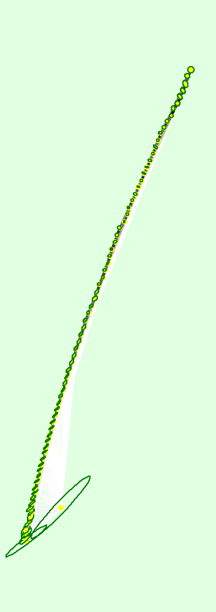
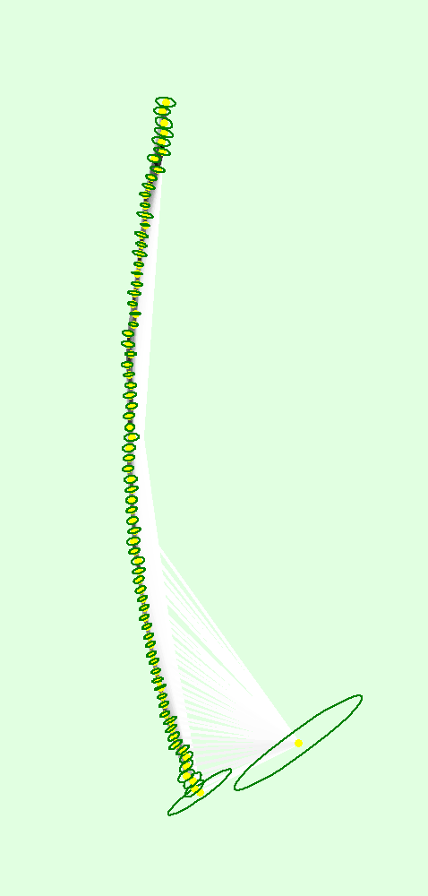
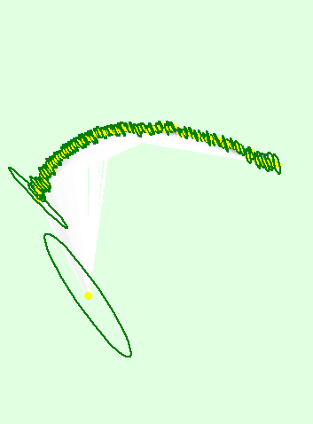

| Important: Click on the different icons for: | |
| Click here for additional tips to analyze the Quality Report |
Summary |
| Project | pix4d |
| Processed | 2020-08-04 10:25:24 |
| Camera Model Name(s) | _0.0_153x1080 (RGB), _0.0_247x996 (RGB), _0.0_390x976 (RGB), _0.0_387x888 (RGB), _0.0_438x1035 (RGB), _0.0_477x1032 (RGB), _0.0_432x991 (RGB), _0.0_387x1016 (RGB), _0.0_414x1057 (RGB), _0.0_441x1035 (RGB), _0.0_411x999 (RGB), _0.0_444x1051 (RGB), _0.0_265x960 (RGB), _0.0_453x1061 (RGB), _0.0_426x1044 (RGB), _0.0_429x1058 (RGB), _0.0_450x1080 (RGB), _0.0_456x1080 (RGB), _0.0_462x1080 (RGB), _0.0_474x1080 (RGB), _0.0_468x1080 (RGB), _0.0_283x995 (RGB), _0.0_501x1080 (RGB), _0.0_513x1080 (RGB), _0.0_510x1080 (RGB), _0.0_504x1080 (RGB), _0.0_525x1080 (RGB), _0.0_486x1080 (RGB), _0.0_522x1080 (RGB), _0.0_519x1080 (RGB), _0.0_320x1030 (RGB), _0.0_546x1080 (RGB), _0.0_528x1080 (RGB), _0.0_570x1080 (RGB), _0.0_555x1080 (RGB), _0.0_558x1080 (RGB), _0.0_606x1080 (RGB), _0.0_573x1080 (RGB), _0.0_579x1080 (RGB), _0.0_621x1080 (RGB), _0.0_343x967 (RGB), _0.0_627x1080 (RGB), _0.0_639x1080 (RGB), _0.0_594x1080 (RGB), _0.0_612x1080 (RGB), _0.0_582x1080 (RGB), _0.0_615x1080 (RGB), _0.0_588x1080 (RGB), _0.0_537x1080 (RGB), _0.0_354x942 (RGB), _0.0_597x1080 (RGB), _0.0_642x1080 (RGB), _0.0_660x1080 (RGB), _0.0_596x1080 (RGB), _0.0_351x972 (RGB), _0.0_556x1080 (RGB), _0.0_527x1080 (RGB), _0.0_511x1080 (RGB), _0.0_454x1080 (RGB), _0.0_419x1080 (RGB), _0.0_388x1008 (RGB), _0.0_422x1033 (RGB) |
| Average Ground Sampling Distance (GSD) | undefined |
| Time for Initial Processing (without report) | 03m:49s |
Quality Check |
| Images | median of 3423 keypoints per image |  |
|
| Dataset | 76 out of 77 images calibrated (98%), all images enabled |  |
|
| Camera Optimization | 353.02% relative difference between initial and optimized internal camera parameters |  |
|
| Matching | median of 1179.5 matches per calibrated image | |
|
| Georeferencing | no, no 3D GCP | |
Calibration Details |
| Number of Calibrated Images | 76 out of 77 |
| Number of Geolocated Images | 0 out of 77 |
Initial Image Positions |
Computed Image/GCPs/Manual Tie Points Positions |
Bundle Block Adjustment Details |
| Number of 2D Keypoint Observations for Bundle Block Adjustment | 82454 |
| Number of 3D Points for Bundle Block Adjustment | 23692 |
| Mean Reprojection Error [pixels] | 0.215 |
Internal Camera Parameters |
||
 |
_0.0_153x1080 (RGB). Sensor Dimensions: 25.400 [mm] x 179.294 [mm] |
|
EXIF ID: _0.0_153x1080 |
| Focal Length |
Principal Point x |
Principal Point y |
R1 | R2 | R3 | T1 | T2 | |
| Initial Values | 120.472 [pixel] 20.000 [mm] |
76.500 [pixel] 12.700 [mm] |
540.000 [pixel] 89.647 [mm] |
0.000 | 0.000 | 0.000 | 0.000 | 0.000 |
| Optimized Values | 1129.248 [pixel] 187.470 [mm] |
154.718 [pixel] 25.685 [mm] |
485.940 [pixel] 80.672 [mm] |
2.096 | -62.844 | 323.917 | 0.132 | -0.140 |
| Uncertainties (Sigma) | 71.200 [pixel] 11.820 [mm] |
22.945 [pixel] 3.809 [mm] |
23.972 [pixel] 3.980 [mm] |
1.167 | 19.438 | 136.768 | 0.039 | 0.029 |
| The correlation between camera internal parameters determined by the bundle adjustment. White indicates a full correlation between the parameters, ie. any change in one can be fully compensated by the other. Black indicates that the parameter is completely independent, and is not affected by other parameters. |
Internal Camera Parameters |
||
| |
_0.0_247x996 (RGB). Sensor Dimensions: 25.400 [mm] x 102.423 [mm] |
|
EXIF ID: _0.0_247x996 |
| Focal Length |
Principal Point x |
Principal Point y |
R1 | R2 | R3 | T1 | T2 | |
| Initial Values | 194.488 [pixel] 20.000 [mm] |
123.500 [pixel] 12.700 [mm] |
498.000 [pixel] 51.211 [mm] |
0.000 | 0.000 | 0.000 | 0.000 | 0.000 |
| Optimized Values | 1511.293 [pixel] 155.412 [mm] |
-415.150 [pixel] -42.692 [mm] |
368.405 [pixel] 37.885 [mm] |
0.204 | -3.111 | 5.405 | 0.001 | 0.023 |
| Uncertainties (Sigma) | 273.218 [pixel] 28.096 [mm] |
135.378 [pixel] 13.921 [mm] |
149.116 [pixel] 15.334 [mm] |
5.454 | 53.697 | 172.418 | 0.006 | 0.020 |
| The correlation between camera internal parameters determined by the bundle adjustment. White indicates a full correlation between the parameters, ie. any change in one can be fully compensated by the other. Black indicates that the parameter is completely independent, and is not affected by other parameters. |
Internal Camera Parameters |
||
| |
_0.0_390x976 (RGB). Sensor Dimensions: 25.400 [mm] x 63.565 [mm] |
|
EXIF ID: _0.0_390x976 |
| Focal Length |
Principal Point x |
Principal Point y |
R1 | R2 | R3 | T1 | T2 | |
| Initial Values | 307.087 [pixel] 20.000 [mm] |
195.000 [pixel] 12.700 [mm] |
488.000 [pixel] 31.783 [mm] |
0.000 | 0.000 | 0.000 | 0.000 | 0.000 |
| Optimized Values | 1651.249 [pixel] 107.543 [mm] |
-110.115 [pixel] -7.172 [mm] |
673.703 [pixel] 43.877 [mm] |
-0.696 | 3.474 | -10.308 | -0.013 | 0.011 |
| Uncertainties (Sigma) | 17.658 [pixel] 1.150 [mm] |
20.049 [pixel] 1.306 [mm] |
13.412 [pixel] 0.874 [mm] |
0.090 | 1.427 | 7.149 | 0.002 | 0.002 |
| The correlation between camera internal parameters determined by the bundle adjustment. White indicates a full correlation between the parameters, ie. any change in one can be fully compensated by the other. Black indicates that the parameter is completely independent, and is not affected by other parameters. |
Internal Camera Parameters |
||
| |
_0.0_387x888 (RGB). Sensor Dimensions: 25.400 [mm] x 58.282 [mm] |
|
EXIF ID: _0.0_387x888 |
| Focal Length |
Principal Point x |
Principal Point y |
R1 | R2 | R3 | T1 | T2 | |
| Initial Values | 304.724 [pixel] 20.000 [mm] |
193.500 [pixel] 12.700 [mm] |
444.000 [pixel] 29.141 [mm] |
0.000 | 0.000 | 0.000 | 0.000 | 0.000 |
| Optimized Values | 1647.882 [pixel] 108.156 [mm] |
-32.214 [pixel] -2.114 [mm] |
669.198 [pixel] 43.922 [mm] |
-0.601 | 3.099 | -8.744 | -0.013 | 0.005 |
| Uncertainties (Sigma) | 17.467 [pixel] 1.146 [mm] |
19.399 [pixel] 1.273 [mm] |
14.837 [pixel] 0.974 [mm] |
0.103 | 2.107 | 13.498 | 0.002 | 0.003 |
| The correlation between camera internal parameters determined by the bundle adjustment. White indicates a full correlation between the parameters, ie. any change in one can be fully compensated by the other. Black indicates that the parameter is completely independent, and is not affected by other parameters. |
Internal Camera Parameters |
||
| |
_0.0_438x1035 (RGB). Sensor Dimensions: 25.400 [mm] x 60.021 [mm] |
|
EXIF ID: _0.0_438x1035 |
| Focal Length |
Principal Point x |
Principal Point y |
R1 | R2 | R3 | T1 | T2 | |
| Initial Values | 344.882 [pixel] 20.000 [mm] |
219.000 [pixel] 12.700 [mm] |
517.500 [pixel] 30.010 [mm] |
0.000 | 0.000 | 0.000 | 0.000 | 0.000 |
| Optimized Values | 1662.037 [pixel] 96.383 [mm] |
-58.176 [pixel] -3.374 [mm] |
665.992 [pixel] 38.621 [mm] |
-0.595 | 2.810 | -9.192 | -0.009 | 0.005 |
| Uncertainties (Sigma) | 17.657 [pixel] 1.024 [mm] |
18.431 [pixel] 1.069 [mm] |
14.750 [pixel] 0.855 [mm] |
0.065 | 1.046 | 5.307 | 0.002 | 0.002 |
| The correlation between camera internal parameters determined by the bundle adjustment. White indicates a full correlation between the parameters, ie. any change in one can be fully compensated by the other. Black indicates that the parameter is completely independent, and is not affected by other parameters. |
Internal Camera Parameters |
||
| |
_0.0_477x1032 (RGB). Sensor Dimensions: 25.400 [mm] x 54.953 [mm] |
|
EXIF ID: _0.0_477x1032 |
| Focal Length |
Principal Point x |
Principal Point y |
R1 | R2 | R3 | T1 | T2 | |
| Initial Values | 375.591 [pixel] 20.000 [mm] |
238.500 [pixel] 12.700 [mm] |
516.000 [pixel] 27.477 [mm] |
0.000 | 0.000 | 0.000 | 0.000 | 0.000 |
| Optimized Values | 1650.732 [pixel] 87.901 [mm] |
-30.541 [pixel] -1.626 [mm] |
712.197 [pixel] 37.924 [mm] |
-0.473 | 1.654 | -5.499 | -0.013 | 0.003 |
| Uncertainties (Sigma) | 17.584 [pixel] 0.936 [mm] |
17.762 [pixel] 0.946 [mm] |
16.843 [pixel] 0.897 [mm] |
0.064 | 0.923 | 4.370 | 0.002 | 0.002 |
| The correlation between camera internal parameters determined by the bundle adjustment. White indicates a full correlation between the parameters, ie. any change in one can be fully compensated by the other. Black indicates that the parameter is completely independent, and is not affected by other parameters. |
Internal Camera Parameters |
||
| |
_0.0_432x991 (RGB). Sensor Dimensions: 25.400 [mm] x 58.267 [mm] |
|
EXIF ID: _0.0_432x991 |
| Focal Length |
Principal Point x |
Principal Point y |
R1 | R2 | R3 | T1 | T2 | |
| Initial Values | 340.157 [pixel] 20.000 [mm] |
216.000 [pixel] 12.700 [mm] |
495.500 [pixel] 29.134 [mm] |
0.000 | 0.000 | 0.000 | 0.000 | 0.000 |
| Optimized Values | 1650.472 [pixel] 97.042 [mm] |
-19.884 [pixel] -1.169 [mm] |
757.558 [pixel] 44.542 [mm] |
-0.459 | 1.646 | -6.127 | -0.016 | 0.001 |
| Uncertainties (Sigma) | 17.420 [pixel] 1.024 [mm] |
16.824 [pixel] 0.989 [mm] |
16.268 [pixel] 0.957 [mm] |
0.069 | 1.121 | 5.929 | 0.002 | 0.002 |
| The correlation between camera internal parameters determined by the bundle adjustment. White indicates a full correlation between the parameters, ie. any change in one can be fully compensated by the other. Black indicates that the parameter is completely independent, and is not affected by other parameters. |
Internal Camera Parameters |
||
| |
_0.0_387x1016 (RGB). Sensor Dimensions: 25.400 [mm] x 66.683 [mm] |
|
EXIF ID: _0.0_387x1016 |
| Focal Length |
Principal Point x |
Principal Point y |
R1 | R2 | R3 | T1 | T2 | |
| Initial Values | 304.724 [pixel] 20.000 [mm] |
193.500 [pixel] 12.700 [mm] |
508.000 [pixel] 33.342 [mm] |
0.000 | 0.000 | 0.000 | 0.000 | 0.000 |
| Optimized Values | 1653.775 [pixel] 108.542 [mm] |
-37.413 [pixel] -2.456 [mm] |
756.583 [pixel] 49.657 [mm] |
-0.469 | 1.683 | -6.176 | -0.015 | 0.001 |
| Uncertainties (Sigma) | 17.546 [pixel] 1.152 [mm] |
17.125 [pixel] 1.124 [mm] |
18.259 [pixel] 1.198 [mm] |
0.073 | 1.208 | 6.457 | 0.002 | 0.002 |
| The correlation between camera internal parameters determined by the bundle adjustment. White indicates a full correlation between the parameters, ie. any change in one can be fully compensated by the other. Black indicates that the parameter is completely independent, and is not affected by other parameters. |
Internal Camera Parameters |
||
| |
_0.0_414x1057 (RGB). Sensor Dimensions: 25.400 [mm] x 64.850 [mm] |
|
EXIF ID: _0.0_414x1057 |
| Focal Length |
Principal Point x |
Principal Point y |
R1 | R2 | R3 | T1 | T2 | |
| Initial Values | 325.984 [pixel] 20.000 [mm] |
207.000 [pixel] 12.700 [mm] |
528.500 [pixel] 32.425 [mm] |
0.000 | 0.000 | 0.000 | 0.000 | 0.000 |
| Optimized Values | 1654.487 [pixel] 101.507 [mm] |
17.012 [pixel] 1.044 [mm] |
779.463 [pixel] 47.822 [mm] |
-0.474 | 1.875 | -6.750 | -0.015 | 0.000 |
| Uncertainties (Sigma) | 17.360 [pixel] 1.065 [mm] |
15.549 [pixel] 0.954 [mm] |
16.079 [pixel] 0.987 [mm] |
0.061 | 1.014 | 5.239 | 0.002 | 0.002 |
| The correlation between camera internal parameters determined by the bundle adjustment. White indicates a full correlation between the parameters, ie. any change in one can be fully compensated by the other. Black indicates that the parameter is completely independent, and is not affected by other parameters. |
Internal Camera Parameters |
||
| |
_0.0_441x1035 (RGB). Sensor Dimensions: 25.400 [mm] x 59.612 [mm] |
|
EXIF ID: _0.0_441x1035 |
| Focal Length |
Principal Point x |
Principal Point y |
R1 | R2 | R3 | T1 | T2 | |
| Initial Values | 347.244 [pixel] 20.000 [mm] |
220.500 [pixel] 12.700 [mm] |
517.500 [pixel] 29.806 [mm] |
0.000 | 0.000 | 0.000 | 0.000 | 0.000 |
| Optimized Values | 1651.445 [pixel] 95.117 [mm] |
60.977 [pixel] 3.512 [mm] |
807.157 [pixel] 46.489 [mm] |
-0.525 | 2.435 | -8.761 | -0.019 | 0.002 |
| Uncertainties (Sigma) | 17.234 [pixel] 0.993 [mm] |
14.793 [pixel] 0.852 [mm] |
15.711 [pixel] 0.905 [mm] |
0.063 | 1.057 | 5.379 | 0.002 | 0.002 |
| The correlation between camera internal parameters determined by the bundle adjustment. White indicates a full correlation between the parameters, ie. any change in one can be fully compensated by the other. Black indicates that the parameter is completely independent, and is not affected by other parameters. |
Internal Camera Parameters |
||
| |
_0.0_411x999 (RGB). Sensor Dimensions: 25.400 [mm] x 61.739 [mm] |
|
EXIF ID: _0.0_411x999 |
| Focal Length |
Principal Point x |
Principal Point y |
R1 | R2 | R3 | T1 | T2 | |
| Initial Values | 323.622 [pixel] 20.000 [mm] |
205.500 [pixel] 12.700 [mm] |
499.500 [pixel] 30.869 [mm] |
0.000 | 0.000 | 0.000 | 0.000 | 0.000 |
| Optimized Values | 1648.407 [pixel] 101.872 [mm] |
51.889 [pixel] 3.207 [mm] |
828.945 [pixel] 51.229 [mm] |
-0.545 | 2.872 | -11.265 | -0.021 | 0.005 |
| Uncertainties (Sigma) | 17.153 [pixel] 1.060 [mm] |
15.107 [pixel] 0.934 [mm] |
16.701 [pixel] 1.032 [mm] |
0.065 | 1.138 | 6.003 | 0.002 | 0.002 |
| The correlation between camera internal parameters determined by the bundle adjustment. White indicates a full correlation between the parameters, ie. any change in one can be fully compensated by the other. Black indicates that the parameter is completely independent, and is not affected by other parameters. |
Internal Camera Parameters |
||
| |
_0.0_444x1051 (RGB). Sensor Dimensions: 25.400 [mm] x 60.125 [mm] |
|
EXIF ID: _0.0_444x1051 |
| Focal Length |
Principal Point x |
Principal Point y |
R1 | R2 | R3 | T1 | T2 | |
| Initial Values | 349.606 [pixel] 20.000 [mm] |
222.000 [pixel] 12.700 [mm] |
525.500 [pixel] 30.062 [mm] |
0.000 | 0.000 | 0.000 | 0.000 | 0.000 |
| Optimized Values | 1649.584 [pixel] 94.368 [mm] |
146.385 [pixel] 8.374 [mm] |
883.100 [pixel] 50.520 [mm] |
-0.519 | 1.444 | -3.176 | -0.023 | 0.006 |
| Uncertainties (Sigma) | 17.338 [pixel] 0.992 [mm] |
14.332 [pixel] 0.820 [mm] |
17.433 [pixel] 0.997 [mm] |
0.062 | 0.830 | 3.759 | 0.003 | 0.002 |
| The correlation between camera internal parameters determined by the bundle adjustment. White indicates a full correlation between the parameters, ie. any change in one can be fully compensated by the other. Black indicates that the parameter is completely independent, and is not affected by other parameters. |
Internal Camera Parameters |
||
| |
_0.0_265x960 (RGB). Sensor Dimensions: 25.400 [mm] x 92.015 [mm] |
|
EXIF ID: _0.0_265x960 |
| Focal Length |
Principal Point x |
Principal Point y |
R1 | R2 | R3 | T1 | T2 | |
| Initial Values | 208.661 [pixel] 20.000 [mm] |
132.500 [pixel] 12.700 [mm] |
480.000 [pixel] 46.008 [mm] |
0.000 | 0.000 | 0.000 | 0.000 | 0.000 |
| Optimized Values | 1578.919 [pixel] 151.338 [mm] |
-294.388 [pixel] -28.217 [mm] |
401.499 [pixel] 38.483 [mm] |
-0.047 | -3.010 | 8.478 | 0.005 | 0.016 |
| Uncertainties (Sigma) | 25.206 [pixel] 2.416 [mm] |
49.464 [pixel] 4.741 [mm] |
53.031 [pixel] 5.083 [mm] |
0.463 | 6.214 | 26.925 | 0.003 | 0.006 |
| The correlation between camera internal parameters determined by the bundle adjustment. White indicates a full correlation between the parameters, ie. any change in one can be fully compensated by the other. Black indicates that the parameter is completely independent, and is not affected by other parameters. |
Internal Camera Parameters |
||
| |
_0.0_453x1061 (RGB). Sensor Dimensions: 25.400 [mm] x 59.491 [mm] |
|
EXIF ID: _0.0_453x1061 |
| Focal Length |
Principal Point x |
Principal Point y |
R1 | R2 | R3 | T1 | T2 | |
| Initial Values | 356.693 [pixel] 20.000 [mm] |
226.500 [pixel] 12.700 [mm] |
530.500 [pixel] 29.745 [mm] |
0.000 | 0.000 | 0.000 | 0.000 | 0.000 |
| Optimized Values | 1648.167 [pixel] 92.414 [mm] |
139.742 [pixel] 7.835 [mm] |
880.593 [pixel] 49.375 [mm] |
-0.461 | 1.083 | -2.288 | -0.024 | 0.004 |
| Uncertainties (Sigma) | 17.245 [pixel] 0.967 [mm] |
13.521 [pixel] 0.758 [mm] |
15.921 [pixel] 0.893 [mm] |
0.054 | 0.690 | 3.044 | 0.003 | 0.002 |
| The correlation between camera internal parameters determined by the bundle adjustment. White indicates a full correlation between the parameters, ie. any change in one can be fully compensated by the other. Black indicates that the parameter is completely independent, and is not affected by other parameters. |
Internal Camera Parameters |
||
| |
_0.0_426x1044 (RGB). Sensor Dimensions: 25.400 [mm] x 62.248 [mm] |
|
EXIF ID: _0.0_426x1044 |
| Focal Length |
Principal Point x |
Principal Point y |
R1 | R2 | R3 | T1 | T2 | |
| Initial Values | 335.433 [pixel] 20.000 [mm] |
213.000 [pixel] 12.700 [mm] |
522.000 [pixel] 31.124 [mm] |
0.000 | 0.000 | 0.000 | 0.000 | 0.000 |
| Optimized Values | 1651.057 [pixel] 98.443 [mm] |
151.939 [pixel] 9.059 [mm] |
874.059 [pixel] 52.115 [mm] |
-0.437 | 1.401 | -3.986 | -0.019 | 0.001 |
| Uncertainties (Sigma) | 17.351 [pixel] 1.035 [mm] |
13.898 [pixel] 0.829 [mm] |
18.728 [pixel] 1.117 [mm] |
0.062 | 0.819 | 3.841 | 0.003 | 0.002 |
| The correlation between camera internal parameters determined by the bundle adjustment. White indicates a full correlation between the parameters, ie. any change in one can be fully compensated by the other. Black indicates that the parameter is completely independent, and is not affected by other parameters. |
Internal Camera Parameters |
||
| |
_0.0_429x1058 (RGB). Sensor Dimensions: 25.400 [mm] x 62.641 [mm] |
|
EXIF ID: _0.0_429x1058 |
| Focal Length |
Principal Point x |
Principal Point y |
R1 | R2 | R3 | T1 | T2 | |
| Initial Values | 337.795 [pixel] 20.000 [mm] |
214.500 [pixel] 12.700 [mm] |
529.000 [pixel] 31.321 [mm] |
0.000 | 0.000 | 0.000 | 0.000 | 0.000 |
| Optimized Values | 1649.155 [pixel] 97.642 [mm] |
162.459 [pixel] 9.619 [mm] |
876.571 [pixel] 51.900 [mm] |
-0.389 | 0.824 | -1.727 | -0.018 | 0.002 |
| Uncertainties (Sigma) | 17.207 [pixel] 1.019 [mm] |
13.067 [pixel] 0.774 [mm] |
16.940 [pixel] 1.003 [mm] |
0.059 | 0.752 | 3.480 | 0.003 | 0.002 |
| The correlation between camera internal parameters determined by the bundle adjustment. White indicates a full correlation between the parameters, ie. any change in one can be fully compensated by the other. Black indicates that the parameter is completely independent, and is not affected by other parameters. |
Internal Camera Parameters |
||
| |
_0.0_450x1080 (RGB). Sensor Dimensions: 25.400 [mm] x 60.960 [mm] |
|
EXIF ID: _0.0_450x1080 |
| Focal Length |
Principal Point x |
Principal Point y |
R1 | R2 | R3 | T1 | T2 | |
| Initial Values | 354.331 [pixel] 20.000 [mm] |
225.000 [pixel] 12.700 [mm] |
540.000 [pixel] 30.480 [mm] |
0.000 | 0.000 | 0.000 | 0.000 | 0.000 |
| Optimized Values | 1651.425 [pixel] 93.214 [mm] |
212.216 [pixel] 11.978 [mm] |
894.919 [pixel] 50.513 [mm] |
-0.374 | 0.651 | -1.220 | -0.019 | 0.003 |
| Uncertainties (Sigma) | 17.240 [pixel] 0.973 [mm] |
11.709 [pixel] 0.661 [mm] |
14.101 [pixel] 0.796 [mm] |
0.050 | 0.576 | 2.521 | 0.003 | 0.001 |
| The correlation between camera internal parameters determined by the bundle adjustment. White indicates a full correlation between the parameters, ie. any change in one can be fully compensated by the other. Black indicates that the parameter is completely independent, and is not affected by other parameters. |
Internal Camera Parameters |
||
| |
_0.0_456x1080 (RGB). Sensor Dimensions: 25.400 [mm] x 60.158 [mm] |
|
EXIF ID: _0.0_456x1080 |
| Focal Length |
Principal Point x |
Principal Point y |
R1 | R2 | R3 | T1 | T2 | |
| Initial Values | 359.055 [pixel] 20.000 [mm] |
228.000 [pixel] 12.700 [mm] |
540.000 [pixel] 30.079 [mm] |
0.000 | 0.000 | 0.000 | 0.000 | 0.000 |
| Optimized Values | 1639.620 [pixel] 91.330 [mm] |
194.519 [pixel] 10.835 [mm] |
924.699 [pixel] 51.507 [mm] |
-0.211 | -0.482 | 2.126 | -0.012 | 0.002 |
| Uncertainties (Sigma) | 17.101 [pixel] 0.953 [mm] |
11.088 [pixel] 0.618 [mm] |
14.269 [pixel] 0.795 [mm] |
0.054 | 0.731 | 3.687 | 0.003 | 0.001 |
| The correlation between camera internal parameters determined by the bundle adjustment. White indicates a full correlation between the parameters, ie. any change in one can be fully compensated by the other. Black indicates that the parameter is completely independent, and is not affected by other parameters. |
Internal Camera Parameters |
||
| |
_0.0_462x1080 (RGB). Sensor Dimensions: 25.400 [mm] x 59.377 [mm] |
|
EXIF ID: _0.0_462x1080 |
| Focal Length |
Principal Point x |
Principal Point y |
R1 | R2 | R3 | T1 | T2 | |
| Initial Values | 363.780 [pixel] 20.000 [mm] |
231.000 [pixel] 12.700 [mm] |
540.000 [pixel] 29.688 [mm] |
0.000 | 0.000 | 0.000 | 0.000 | 0.000 |
| Optimized Values | 1645.323 [pixel] 90.457 [mm] |
197.360 [pixel] 10.851 [mm] |
893.738 [pixel] 49.136 [mm] |
-0.258 | -0.136 | 1.234 | -0.013 | 0.002 |
| Uncertainties (Sigma) | 17.241 [pixel] 0.948 [mm] |
13.610 [pixel] 0.748 [mm] |
17.767 [pixel] 0.977 [mm] |
0.069 | 1.000 | 5.124 | 0.003 | 0.002 |
| The correlation between camera internal parameters determined by the bundle adjustment. White indicates a full correlation between the parameters, ie. any change in one can be fully compensated by the other. Black indicates that the parameter is completely independent, and is not affected by other parameters. |
Internal Camera Parameters |
||
| |
_0.0_474x1080 (RGB). Sensor Dimensions: 25.400 [mm] x 57.873 [mm] |
|
EXIF ID: _0.0_474x1080 |
| Focal Length |
Principal Point x |
Principal Point y |
R1 | R2 | R3 | T1 | T2 | |
| Initial Values | 373.228 [pixel] 20.000 [mm] |
237.000 [pixel] 12.700 [mm] |
540.000 [pixel] 28.937 [mm] |
0.000 | 0.000 | 0.000 | 0.000 | 0.000 |
| Optimized Values | 1647.099 [pixel] 88.262 [mm] |
202.418 [pixel] 10.847 [mm] |
909.269 [pixel] 48.725 [mm] |
-0.277 | -0.179 | 1.469 | -0.015 | 0.002 |
| Uncertainties (Sigma) | 17.145 [pixel] 0.919 [mm] |
13.362 [pixel] 0.716 [mm] |
17.378 [pixel] 0.931 [mm] |
0.058 | 0.626 | 2.610 | 0.003 | 0.002 |
| The correlation between camera internal parameters determined by the bundle adjustment. White indicates a full correlation between the parameters, ie. any change in one can be fully compensated by the other. Black indicates that the parameter is completely independent, and is not affected by other parameters. |
Internal Camera Parameters |
||
| |
_0.0_468x1080 (RGB). Sensor Dimensions: 25.400 [mm] x 58.615 [mm] |
|
EXIF ID: _0.0_468x1080 |
| Focal Length |
Principal Point x |
Principal Point y |
R1 | R2 | R3 | T1 | T2 | |
| Initial Values | 368.504 [pixel] 20.000 [mm] |
234.000 [pixel] 12.700 [mm] |
540.000 [pixel] 29.308 [mm] |
0.000 | 0.000 | 0.000 | 0.000 | 0.000 |
| Optimized Values | 1641.628 [pixel] 89.097 [mm] |
238.494 [pixel] 12.944 [mm] |
910.681 [pixel] 49.426 [mm] |
-0.106 | -3.789 | 22.563 | -0.018 | 0.000 |
| Uncertainties (Sigma) | 17.304 [pixel] 0.939 [mm] |
10.928 [pixel] 0.593 [mm] |
14.455 [pixel] 0.785 [mm] |
0.070 | 1.117 | 6.943 | 0.003 | 0.002 |
| The correlation between camera internal parameters determined by the bundle adjustment. White indicates a full correlation between the parameters, ie. any change in one can be fully compensated by the other. Black indicates that the parameter is completely independent, and is not affected by other parameters. |
Internal Camera Parameters |
||
| |
_0.0_283x995 (RGB). Sensor Dimensions: 25.400 [mm] x 89.304 [mm] |
|
EXIF ID: _0.0_283x995 |
| Focal Length |
Principal Point x |
Principal Point y |
R1 | R2 | R3 | T1 | T2 | |
| Initial Values | 222.835 [pixel] 20.000 [mm] |
141.500 [pixel] 12.700 [mm] |
497.500 [pixel] 44.652 [mm] |
0.000 | 0.000 | 0.000 | 0.000 | 0.000 |
| Optimized Values | 1601.279 [pixel] 143.719 [mm] |
-265.911 [pixel] -23.866 [mm] |
459.150 [pixel] 41.210 [mm] |
-0.291 | -1.058 | 3.982 | -0.000 | 0.014 |
| Uncertainties (Sigma) | 20.170 [pixel] 1.810 [mm] |
37.881 [pixel] 3.400 [mm] |
63.006 [pixel] 5.655 [mm] |
0.271 | 3.590 | 15.425 | 0.005 | 0.005 |
| The correlation between camera internal parameters determined by the bundle adjustment. White indicates a full correlation between the parameters, ie. any change in one can be fully compensated by the other. Black indicates that the parameter is completely independent, and is not affected by other parameters. |
Internal Camera Parameters |
||
| |
_0.0_501x1080 (RGB). Sensor Dimensions: 25.400 [mm] x 54.754 [mm] |
|
EXIF ID: _0.0_501x1080 |
| Focal Length |
Principal Point x |
Principal Point y |
R1 | R2 | R3 | T1 | T2 | |
| Initial Values | 394.488 [pixel] 20.000 [mm] |
250.500 [pixel] 12.700 [mm] |
540.000 [pixel] 27.377 [mm] |
0.000 | 0.000 | 0.000 | 0.000 | 0.000 |
| Optimized Values | 1649.346 [pixel] 83.620 [mm] |
236.282 [pixel] 11.979 [mm] |
918.326 [pixel] 46.558 [mm] |
-0.357 | -0.538 | 6.508 | -0.025 | 0.001 |
| Uncertainties (Sigma) | 17.334 [pixel] 0.879 [mm] |
10.520 [pixel] 0.533 [mm] |
11.989 [pixel] 0.608 [mm] |
0.062 | 0.939 | 5.086 | 0.002 | 0.001 |
| The correlation between camera internal parameters determined by the bundle adjustment. White indicates a full correlation between the parameters, ie. any change in one can be fully compensated by the other. Black indicates that the parameter is completely independent, and is not affected by other parameters. |
Internal Camera Parameters |
||
| |
_0.0_513x1080 (RGB). Sensor Dimensions: 25.400 [mm] x 53.474 [mm] |
|
EXIF ID: _0.0_513x1080 |
| Focal Length |
Principal Point x |
Principal Point y |
R1 | R2 | R3 | T1 | T2 | |
| Initial Values | 403.937 [pixel] 20.000 [mm] |
256.500 [pixel] 12.700 [mm] |
540.000 [pixel] 26.737 [mm] |
0.000 | 0.000 | 0.000 | 0.000 | 0.000 |
| Optimized Values | 1655.771 [pixel] 81.982 [mm] |
239.824 [pixel] 11.874 [mm] |
881.198 [pixel] 43.630 [mm] |
-0.386 | -0.714 | 10.459 | -0.026 | 0.000 |
| Uncertainties (Sigma) | 17.420 [pixel] 0.863 [mm] |
11.908 [pixel] 0.590 [mm] |
13.298 [pixel] 0.658 [mm] |
0.083 | 1.536 | 9.552 | 0.003 | 0.002 |
| The correlation between camera internal parameters determined by the bundle adjustment. White indicates a full correlation between the parameters, ie. any change in one can be fully compensated by the other. Black indicates that the parameter is completely independent, and is not affected by other parameters. |
Internal Camera Parameters |
||
| |
_0.0_510x1080 (RGB). Sensor Dimensions: 25.400 [mm] x 53.788 [mm] |
|
EXIF ID: _0.0_510x1080 |
| Focal Length |
Principal Point x |
Principal Point y |
R1 | R2 | R3 | T1 | T2 | |
| Initial Values | 401.575 [pixel] 20.000 [mm] |
255.000 [pixel] 12.700 [mm] |
540.000 [pixel] 26.894 [mm] |
0.000 | 0.000 | 0.000 | 0.000 | 0.000 |
| Optimized Values | 1648.366 [pixel] 82.095 [mm] |
242.103 [pixel] 12.058 [mm] |
897.967 [pixel] 44.722 [mm] |
-0.415 | 0.685 | 0.741 | -0.024 | -0.001 |
| Uncertainties (Sigma) | 17.399 [pixel] 0.867 [mm] |
13.440 [pixel] 0.669 [mm] |
15.065 [pixel] 0.750 [mm] |
0.086 | 1.466 | 8.450 | 0.003 | 0.002 |
| The correlation between camera internal parameters determined by the bundle adjustment. White indicates a full correlation between the parameters, ie. any change in one can be fully compensated by the other. Black indicates that the parameter is completely independent, and is not affected by other parameters. |
Internal Camera Parameters |
||
| |
_0.0_504x1080 (RGB). Sensor Dimensions: 25.400 [mm] x 54.429 [mm] |
|
EXIF ID: _0.0_504x1080 |
| Focal Length |
Principal Point x |
Principal Point y |
R1 | R2 | R3 | T1 | T2 | |
| Initial Values | 396.850 [pixel] 20.000 [mm] |
252.000 [pixel] 12.700 [mm] |
540.000 [pixel] 27.214 [mm] |
0.000 | 0.000 | 0.000 | 0.000 | 0.000 |
| Optimized Values | 1646.607 [pixel] 82.984 [mm] |
229.202 [pixel] 11.551 [mm] |
907.865 [pixel] 45.754 [mm] |
-0.406 | 0.868 | -2.337 | -0.023 | 0.002 |
| Uncertainties (Sigma) | 17.377 [pixel] 0.876 [mm] |
15.307 [pixel] 0.771 [mm] |
16.369 [pixel] 0.825 [mm] |
0.086 | 1.413 | 7.912 | 0.003 | 0.002 |
| The correlation between camera internal parameters determined by the bundle adjustment. White indicates a full correlation between the parameters, ie. any change in one can be fully compensated by the other. Black indicates that the parameter is completely independent, and is not affected by other parameters. |
Internal Camera Parameters |
||
| |
_0.0_525x1080 (RGB). Sensor Dimensions: 25.400 [mm] x 52.251 [mm] |
|
EXIF ID: _0.0_525x1080 |
| Focal Length |
Principal Point x |
Principal Point y |
R1 | R2 | R3 | T1 | T2 | |
| Initial Values | 413.386 [pixel] 20.000 [mm] |
262.500 [pixel] 12.700 [mm] |
540.000 [pixel] 26.126 [mm] |
0.000 | 0.000 | 0.000 | 0.000 | 0.000 |
| Optimized Values | 1644.485 [pixel] 79.562 [mm] |
227.403 [pixel] 11.002 [mm] |
919.079 [pixel] 44.466 [mm] |
-0.314 | -0.494 | 5.113 | -0.022 | 0.001 |
| Uncertainties (Sigma) | 17.196 [pixel] 0.832 [mm] |
11.567 [pixel] 0.560 [mm] |
12.891 [pixel] 0.624 [mm] |
0.065 | 1.025 | 5.687 | 0.002 | 0.002 |
| The correlation between camera internal parameters determined by the bundle adjustment. White indicates a full correlation between the parameters, ie. any change in one can be fully compensated by the other. Black indicates that the parameter is completely independent, and is not affected by other parameters. |
Internal Camera Parameters |
||
| |
_0.0_486x1080 (RGB). Sensor Dimensions: 25.400 [mm] x 56.444 [mm] |
|
EXIF ID: _0.0_486x1080 |
| Focal Length |
Principal Point x |
Principal Point y |
R1 | R2 | R3 | T1 | T2 | |
| Initial Values | 382.677 [pixel] 20.000 [mm] |
243.000 [pixel] 12.700 [mm] |
540.000 [pixel] 28.222 [mm] |
0.000 | 0.000 | 0.000 | 0.000 | 0.000 |
| Optimized Values | 1641.715 [pixel] 85.802 [mm] |
221.941 [pixel] 11.599 [mm] |
908.627 [pixel] 47.488 [mm] |
-0.308 | -0.779 | 7.506 | -0.023 | 0.001 |
| Uncertainties (Sigma) | 17.231 [pixel] 0.901 [mm] |
14.546 [pixel] 0.760 [mm] |
16.058 [pixel] 0.839 [mm] |
0.083 | 1.422 | 8.349 | 0.003 | 0.002 |
| The correlation between camera internal parameters determined by the bundle adjustment. White indicates a full correlation between the parameters, ie. any change in one can be fully compensated by the other. Black indicates that the parameter is completely independent, and is not affected by other parameters. |
Internal Camera Parameters |
||
| |
_0.0_522x1080 (RGB). Sensor Dimensions: 25.400 [mm] x 52.552 [mm] |
|
EXIF ID: _0.0_522x1080 |
| Focal Length |
Principal Point x |
Principal Point y |
R1 | R2 | R3 | T1 | T2 | |
| Initial Values | 411.024 [pixel] 20.000 [mm] |
261.000 [pixel] 12.700 [mm] |
540.000 [pixel] 26.276 [mm] |
0.000 | 0.000 | 0.000 | 0.000 | 0.000 |
| Optimized Values | 1646.391 [pixel] 80.112 [mm] |
225.871 [pixel] 10.991 [mm] |
898.608 [pixel] 43.725 [mm] |
-0.378 | 0.051 | 5.602 | -0.022 | -0.001 |
| Uncertainties (Sigma) | 17.248 [pixel] 0.839 [mm] |
12.964 [pixel] 0.631 [mm] |
15.420 [pixel] 0.750 [mm] |
0.092 | 1.730 | 10.688 | 0.003 | 0.002 |
| The correlation between camera internal parameters determined by the bundle adjustment. White indicates a full correlation between the parameters, ie. any change in one can be fully compensated by the other. Black indicates that the parameter is completely independent, and is not affected by other parameters. |
Internal Camera Parameters |
||
| |
_0.0_519x1080 (RGB). Sensor Dimensions: 25.400 [mm] x 52.855 [mm] |
|
EXIF ID: _0.0_519x1080 |
| Focal Length |
Principal Point x |
Principal Point y |
R1 | R2 | R3 | T1 | T2 | |
| Initial Values | 408.661 [pixel] 20.000 [mm] |
259.500 [pixel] 12.700 [mm] |
540.000 [pixel] 26.428 [mm] |
0.000 | 0.000 | 0.000 | 0.000 | 0.000 |
| Optimized Values | 1645.919 [pixel] 80.552 [mm] |
230.941 [pixel] 11.302 [mm] |
887.721 [pixel] 43.445 [mm] |
-0.464 | 2.618 | -11.568 | -0.022 | -0.001 |
| Uncertainties (Sigma) | 17.246 [pixel] 0.844 [mm] |
13.495 [pixel] 0.660 [mm] |
14.474 [pixel] 0.708 [mm] |
0.097 | 2.043 | 13.562 | 0.002 | 0.002 |
| The correlation between camera internal parameters determined by the bundle adjustment. White indicates a full correlation between the parameters, ie. any change in one can be fully compensated by the other. Black indicates that the parameter is completely independent, and is not affected by other parameters. |
Internal Camera Parameters |
||
| |
_0.0_320x1030 (RGB). Sensor Dimensions: 25.400 [mm] x 81.756 [mm] |
|
EXIF ID: _0.0_320x1030 |
| Focal Length |
Principal Point x |
Principal Point y |
R1 | R2 | R3 | T1 | T2 | |
| Initial Values | 251.969 [pixel] 20.000 [mm] |
160.000 [pixel] 12.700 [mm] |
515.000 [pixel] 40.878 [mm] |
0.000 | 0.000 | 0.000 | 0.000 | 0.000 |
| Optimized Values | 1615.003 [pixel] 128.191 [mm] |
-237.102 [pixel] -18.820 [mm] |
453.503 [pixel] 35.997 [mm] |
-0.233 | -1.111 | 3.634 | 0.000 | 0.007 |
| Uncertainties (Sigma) | 18.677 [pixel] 1.482 [mm] |
31.892 [pixel] 2.531 [mm] |
39.215 [pixel] 3.113 [mm] |
0.149 | 1.903 | 7.975 | 0.003 | 0.004 |
| The correlation between camera internal parameters determined by the bundle adjustment. White indicates a full correlation between the parameters, ie. any change in one can be fully compensated by the other. Black indicates that the parameter is completely independent, and is not affected by other parameters. |
|
|
The number of Automatic Tie Points (ATPs) per pixel, averaged over all images of the camera model, is color coded between black and white. White indicates that, on average, more than 16 ATPs have been extracted at the pixel location. Black indicates that, on average, 0 ATPs have been extracted at the pixel location. Click on the image to the see the average direction and magnitude of the re-projection error for each pixel. Note that the vectors are scaled for better visualization. The scale bar indicates the magnitude of 1 pixel error. |
Internal Camera Parameters |
||
| |
_0.0_546x1080 (RGB). Sensor Dimensions: 25.400 [mm] x 50.242 [mm] |
|
EXIF ID: _0.0_546x1080 |
| Focal Length |
Principal Point x |
Principal Point y |
R1 | R2 | R3 | T1 | T2 | |
| Initial Values | 429.921 [pixel] 20.000 [mm] |
273.000 [pixel] 12.700 [mm] |
540.000 [pixel] 25.121 [mm] |
0.000 | 0.000 | 0.000 | 0.000 | 0.000 |
| Optimized Values | 1640.241 [pixel] 76.304 [mm] |
240.997 [pixel] 11.211 [mm] |
942.831 [pixel] 43.861 [mm] |
-0.171 | -1.455 | 9.019 | -0.010 | -0.001 |
| Uncertainties (Sigma) | 17.187 [pixel] 0.800 [mm] |
12.428 [pixel] 0.578 [mm] |
15.108 [pixel] 0.703 [mm] |
0.079 | 1.225 | 6.613 | 0.003 | 0.002 |
| The correlation between camera internal parameters determined by the bundle adjustment. White indicates a full correlation between the parameters, ie. any change in one can be fully compensated by the other. Black indicates that the parameter is completely independent, and is not affected by other parameters. |
Internal Camera Parameters |
||
| |
_0.0_528x1080 (RGB). Sensor Dimensions: 25.400 [mm] x 51.955 [mm] |
|
EXIF ID: _0.0_528x1080 |
| Focal Length |
Principal Point x |
Principal Point y |
R1 | R2 | R3 | T1 | T2 | |
| Initial Values | 415.748 [pixel] 20.000 [mm] |
264.000 [pixel] 12.700 [mm] |
540.000 [pixel] 25.977 [mm] |
0.000 | 0.000 | 0.000 | 0.000 | 0.000 |
| Optimized Values | 1621.928 [pixel] 78.025 [mm] |
236.713 [pixel] 11.387 [mm] |
1016.784 [pixel] 48.913 [mm] |
-0.086 | -0.633 | 1.990 | 0.004 | -0.001 |
| Uncertainties (Sigma) | 16.973 [pixel] 0.817 [mm] |
11.166 [pixel] 0.537 [mm] |
15.598 [pixel] 0.750 [mm] |
0.076 | 0.854 | 3.368 | 0.003 | 0.001 |
| The correlation between camera internal parameters determined by the bundle adjustment. White indicates a full correlation between the parameters, ie. any change in one can be fully compensated by the other. Black indicates that the parameter is completely independent, and is not affected by other parameters. |
Internal Camera Parameters |
||
| |
_0.0_570x1080 (RGB). Sensor Dimensions: 25.400 [mm] x 48.126 [mm] |
|
EXIF ID: _0.0_570x1080 |
| Focal Length |
Principal Point x |
Principal Point y |
R1 | R2 | R3 | T1 | T2 | |
| Initial Values | 448.819 [pixel] 20.000 [mm] |
285.000 [pixel] 12.700 [mm] |
540.000 [pixel] 24.063 [mm] |
0.000 | 0.000 | 0.000 | 0.000 | 0.000 |
| Optimized Values | 1626.318 [pixel] 72.471 [mm] |
254.725 [pixel] 11.351 [mm] |
1017.835 [pixel] 45.356 [mm] |
-0.057 | -1.135 | 3.890 | 0.003 | -0.001 |
| Uncertainties (Sigma) | 16.712 [pixel] 0.745 [mm] |
6.847 [pixel] 0.305 [mm] |
10.743 [pixel] 0.479 [mm] |
0.039 | 0.433 | 1.763 | 0.002 | 0.001 |
| The correlation between camera internal parameters determined by the bundle adjustment. White indicates a full correlation between the parameters, ie. any change in one can be fully compensated by the other. Black indicates that the parameter is completely independent, and is not affected by other parameters. |
Internal Camera Parameters |
||
| |
_0.0_555x1080 (RGB). Sensor Dimensions: 25.400 [mm] x 49.427 [mm] |
|
EXIF ID: _0.0_555x1080 |
| Focal Length |
Principal Point x |
Principal Point y |
R1 | R2 | R3 | T1 | T2 | |
| Initial Values | 437.008 [pixel] 20.000 [mm] |
277.500 [pixel] 12.700 [mm] |
540.000 [pixel] 24.714 [mm] |
0.000 | 0.000 | 0.000 | 0.000 | 0.000 |
| Optimized Values | 1630.655 [pixel] 74.628 [mm] |
253.980 [pixel] 11.624 [mm] |
1013.778 [pixel] 46.396 [mm] |
-0.148 | -0.035 | -0.915 | 0.001 | 0.002 |
| Uncertainties (Sigma) | 16.888 [pixel] 0.773 [mm] |
7.839 [pixel] 0.359 [mm] |
11.725 [pixel] 0.537 [mm] |
0.044 | 0.490 | 2.000 | 0.002 | 0.001 |
| The correlation between camera internal parameters determined by the bundle adjustment. White indicates a full correlation between the parameters, ie. any change in one can be fully compensated by the other. Black indicates that the parameter is completely independent, and is not affected by other parameters. |
Internal Camera Parameters |
||
| |
_0.0_558x1080 (RGB). Sensor Dimensions: 25.400 [mm] x 49.161 [mm] |
|
EXIF ID: _0.0_558x1080 |
| Focal Length |
Principal Point x |
Principal Point y |
R1 | R2 | R3 | T1 | T2 | |
| Initial Values | 439.370 [pixel] 20.000 [mm] |
279.000 [pixel] 12.700 [mm] |
540.000 [pixel] 24.581 [mm] |
0.000 | 0.000 | 0.000 | 0.000 | 0.000 |
| Optimized Values | 1622.905 [pixel] 73.874 [mm] |
259.577 [pixel] 11.816 [mm] |
1036.753 [pixel] 47.193 [mm] |
-0.105 | -0.094 | -0.539 | 0.007 | 0.000 |
| Uncertainties (Sigma) | 16.762 [pixel] 0.763 [mm] |
7.219 [pixel] 0.329 [mm] |
11.422 [pixel] 0.520 [mm] |
0.041 | 0.428 | 1.640 | 0.002 | 0.001 |
| The correlation between camera internal parameters determined by the bundle adjustment. White indicates a full correlation between the parameters, ie. any change in one can be fully compensated by the other. Black indicates that the parameter is completely independent, and is not affected by other parameters. |
Internal Camera Parameters |
||
| |
_0.0_606x1080 (RGB). Sensor Dimensions: 25.400 [mm] x 45.267 [mm] |
|
EXIF ID: _0.0_606x1080 |
| Focal Length |
Principal Point x |
Principal Point y |
R1 | R2 | R3 | T1 | T2 | |
| Initial Values | 477.165 [pixel] 20.000 [mm] |
303.000 [pixel] 12.700 [mm] |
540.000 [pixel] 22.634 [mm] |
0.000 | 0.000 | 0.000 | 0.000 | 0.000 |
| Optimized Values | 1627.431 [pixel] 68.212 [mm] |
285.027 [pixel] 11.947 [mm] |
1014.582 [pixel] 42.525 [mm] |
-0.097 | -0.365 | 0.532 | 0.003 | 0.001 |
| Uncertainties (Sigma) | 16.933 [pixel] 0.710 [mm] |
9.421 [pixel] 0.395 [mm] |
12.922 [pixel] 0.542 [mm] |
0.050 | 0.555 | 2.203 | 0.002 | 0.001 |
| The correlation between camera internal parameters determined by the bundle adjustment. White indicates a full correlation between the parameters, ie. any change in one can be fully compensated by the other. Black indicates that the parameter is completely independent, and is not affected by other parameters. |
Internal Camera Parameters |
||
| |
_0.0_573x1080 (RGB). Sensor Dimensions: 25.400 [mm] x 47.874 [mm] |
|
EXIF ID: _0.0_573x1080 |
| Focal Length |
Principal Point x |
Principal Point y |
R1 | R2 | R3 | T1 | T2 | |
| Initial Values | 451.181 [pixel] 20.000 [mm] |
286.500 [pixel] 12.700 [mm] |
540.000 [pixel] 23.937 [mm] |
0.000 | 0.000 | 0.000 | 0.000 | 0.000 |
| Optimized Values | 1634.146 [pixel] 72.439 [mm] |
244.424 [pixel] 10.835 [mm] |
1006.161 [pixel] 44.601 [mm] |
-0.150 | -0.329 | 1.294 | -0.001 | -0.001 |
| Uncertainties (Sigma) | 16.855 [pixel] 0.747 [mm] |
9.946 [pixel] 0.441 [mm] |
13.215 [pixel] 0.586 [mm] |
0.058 | 0.722 | 3.166 | 0.002 | 0.001 |
| The correlation between camera internal parameters determined by the bundle adjustment. White indicates a full correlation between the parameters, ie. any change in one can be fully compensated by the other. Black indicates that the parameter is completely independent, and is not affected by other parameters. |
Internal Camera Parameters |
||
| |
_0.0_579x1080 (RGB). Sensor Dimensions: 25.400 [mm] x 47.378 [mm] |
|
EXIF ID: _0.0_579x1080 |
| Focal Length |
Principal Point x |
Principal Point y |
R1 | R2 | R3 | T1 | T2 | |
| Initial Values | 455.906 [pixel] 20.000 [mm] |
289.500 [pixel] 12.700 [mm] |
540.000 [pixel] 23.689 [mm] |
0.000 | 0.000 | 0.000 | 0.000 | 0.000 |
| Optimized Values | 1646.302 [pixel] 72.221 [mm] |
223.033 [pixel] 9.784 [mm] |
945.143 [pixel] 41.462 [mm] |
-0.187 | 0.084 | -2.382 | -0.008 | -0.003 |
| Uncertainties (Sigma) | 17.094 [pixel] 0.750 [mm] |
11.136 [pixel] 0.489 [mm] |
13.456 [pixel] 0.590 [mm] |
0.070 | 1.165 | 6.535 | 0.002 | 0.002 |
| The correlation between camera internal parameters determined by the bundle adjustment. White indicates a full correlation between the parameters, ie. any change in one can be fully compensated by the other. Black indicates that the parameter is completely independent, and is not affected by other parameters. |
Internal Camera Parameters |
||
| |
_0.0_621x1080 (RGB). Sensor Dimensions: 25.400 [mm] x 44.174 [mm] |
|
EXIF ID: _0.0_621x1080 |
| Focal Length |
Principal Point x |
Principal Point y |
R1 | R2 | R3 | T1 | T2 | |
| Initial Values | 488.976 [pixel] 20.000 [mm] |
310.500 [pixel] 12.700 [mm] |
540.000 [pixel] 22.087 [mm] |
0.000 | 0.000 | 0.000 | 0.000 | 0.000 |
| Optimized Values | 1626.148 [pixel] 66.512 [mm] |
259.484 [pixel] 10.613 [mm] |
1024.986 [pixel] 41.924 [mm] |
-0.065 | -1.144 | 3.674 | 0.000 | -0.001 |
| Uncertainties (Sigma) | 16.736 [pixel] 0.685 [mm] |
7.711 [pixel] 0.315 [mm] |
11.479 [pixel] 0.470 [mm] |
0.041 | 0.444 | 1.783 | 0.002 | 0.001 |
| The correlation between camera internal parameters determined by the bundle adjustment. White indicates a full correlation between the parameters, ie. any change in one can be fully compensated by the other. Black indicates that the parameter is completely independent, and is not affected by other parameters. |
Internal Camera Parameters |
||
| |
_0.0_343x967 (RGB). Sensor Dimensions: 25.400 [mm] x 71.609 [mm] |
|
EXIF ID: _0.0_343x967 |
| Focal Length |
Principal Point x |
Principal Point y |
R1 | R2 | R3 | T1 | T2 | |
| Initial Values | 270.079 [pixel] 20.000 [mm] |
171.500 [pixel] 12.700 [mm] |
483.500 [pixel] 35.804 [mm] |
0.000 | 0.000 | 0.000 | 0.000 | 0.000 |
| Optimized Values | 1623.697 [pixel] 120.239 [mm] |
-176.910 [pixel] -13.101 [mm] |
576.419 [pixel] 42.685 [mm] |
-0.524 | 1.905 | -7.759 | -0.010 | 0.011 |
| Uncertainties (Sigma) | 18.144 [pixel] 1.344 [mm] |
27.561 [pixel] 2.041 [mm] |
28.259 [pixel] 2.093 [mm] |
0.140 | 2.129 | 10.567 | 0.003 | 0.004 |
| The correlation between camera internal parameters determined by the bundle adjustment. White indicates a full correlation between the parameters, ie. any change in one can be fully compensated by the other. Black indicates that the parameter is completely independent, and is not affected by other parameters. |
Internal Camera Parameters |
||
| |
_0.0_627x1080 (RGB). Sensor Dimensions: 25.400 [mm] x 43.751 [mm] |
|
EXIF ID: _0.0_627x1080 |
| Focal Length |
Principal Point x |
Principal Point y |
R1 | R2 | R3 | T1 | T2 | |
| Initial Values | 493.701 [pixel] 20.000 [mm] |
313.500 [pixel] 12.700 [mm] |
540.000 [pixel] 21.876 [mm] |
0.000 | 0.000 | 0.000 | 0.000 | 0.000 |
| Optimized Values | 1637.504 [pixel] 66.336 [mm] |
258.177 [pixel] 10.459 [mm] |
970.266 [pixel] 39.306 [mm] |
0.018 | -3.622 | 16.778 | -0.007 | -0.001 |
| Uncertainties (Sigma) | 17.101 [pixel] 0.693 [mm] |
10.363 [pixel] 0.420 [mm] |
13.105 [pixel] 0.531 [mm] |
0.069 | 1.033 | 5.514 | 0.003 | 0.002 |
| The correlation between camera internal parameters determined by the bundle adjustment. White indicates a full correlation between the parameters, ie. any change in one can be fully compensated by the other. Black indicates that the parameter is completely independent, and is not affected by other parameters. |
|
|
The number of Automatic Tie Points (ATPs) per pixel, averaged over all images of the camera model, is color coded between black and white. White indicates that, on average, more than 16 ATPs have been extracted at the pixel location. Black indicates that, on average, 0 ATPs have been extracted at the pixel location. Click on the image to the see the average direction and magnitude of the re-projection error for each pixel. Note that the vectors are scaled for better visualization. The scale bar indicates the magnitude of 1 pixel error. |
Internal Camera Parameters |
||
| |
_0.0_639x1080 (RGB). Sensor Dimensions: 25.400 [mm] x 42.930 [mm] |
|
EXIF ID: _0.0_639x1080 |
| Focal Length |
Principal Point x |
Principal Point y |
R1 | R2 | R3 | T1 | T2 | |
| Initial Values | 503.150 [pixel] 20.000 [mm] |
319.500 [pixel] 12.700 [mm] |
540.000 [pixel] 21.465 [mm] |
0.000 | 0.000 | 0.000 | 0.000 | 0.000 |
| Optimized Values | 1637.583 [pixel] 65.093 [mm] |
248.808 [pixel] 9.890 [mm] |
979.080 [pixel] 38.918 [mm] |
-0.049 | -3.002 | 13.740 | -0.013 | 0.001 |
| Uncertainties (Sigma) | 17.080 [pixel] 0.679 [mm] |
11.225 [pixel] 0.446 [mm] |
13.001 [pixel] 0.517 [mm] |
0.066 | 0.902 | 4.505 | 0.003 | 0.001 |
| The correlation between camera internal parameters determined by the bundle adjustment. White indicates a full correlation between the parameters, ie. any change in one can be fully compensated by the other. Black indicates that the parameter is completely independent, and is not affected by other parameters. |
Internal Camera Parameters |
||
| |
_0.0_594x1080 (RGB). Sensor Dimensions: 25.400 [mm] x 46.182 [mm] |
|
EXIF ID: _0.0_594x1080 |
| Focal Length |
Principal Point x |
Principal Point y |
R1 | R2 | R3 | T1 | T2 | |
| Initial Values | 467.717 [pixel] 20.000 [mm] |
297.000 [pixel] 12.700 [mm] |
540.000 [pixel] 23.091 [mm] |
0.000 | 0.000 | 0.000 | 0.000 | 0.000 |
| Optimized Values | 1620.568 [pixel] 69.297 [mm] |
233.305 [pixel] 9.976 [mm] |
1036.628 [pixel] 44.327 [mm] |
-0.031 | -1.014 | 2.987 | 0.007 | -0.002 |
| Uncertainties (Sigma) | 16.642 [pixel] 0.712 [mm] |
6.871 [pixel] 0.294 [mm] |
11.476 [pixel] 0.491 [mm] |
0.039 | 0.409 | 1.556 | 0.002 | 0.001 |
| The correlation between camera internal parameters determined by the bundle adjustment. White indicates a full correlation between the parameters, ie. any change in one can be fully compensated by the other. Black indicates that the parameter is completely independent, and is not affected by other parameters. |
Internal Camera Parameters |
||
| |
_0.0_612x1080 (RGB). Sensor Dimensions: 25.400 [mm] x 44.824 [mm] |
|
EXIF ID: _0.0_612x1080 |
| Focal Length |
Principal Point x |
Principal Point y |
R1 | R2 | R3 | T1 | T2 | |
| Initial Values | 481.890 [pixel] 20.000 [mm] |
306.000 [pixel] 12.700 [mm] |
540.000 [pixel] 22.412 [mm] |
0.000 | 0.000 | 0.000 | 0.000 | 0.000 |
| Optimized Values | 1636.279 [pixel] 67.911 [mm] |
251.814 [pixel] 10.451 [mm] |
989.146 [pixel] 41.053 [mm] |
-0.086 | -1.794 | 7.442 | -0.006 | -0.000 |
| Uncertainties (Sigma) | 16.916 [pixel] 0.702 [mm] |
8.537 [pixel] 0.354 [mm] |
11.556 [pixel] 0.480 [mm] |
0.048 | 0.635 | 3.000 | 0.002 | 0.001 |
| The correlation between camera internal parameters determined by the bundle adjustment. White indicates a full correlation between the parameters, ie. any change in one can be fully compensated by the other. Black indicates that the parameter is completely independent, and is not affected by other parameters. |
Internal Camera Parameters |
||
| |
_0.0_582x1080 (RGB). Sensor Dimensions: 25.400 [mm] x 47.134 [mm] |
|
EXIF ID: _0.0_582x1080 |
| Focal Length |
Principal Point x |
Principal Point y |
R1 | R2 | R3 | T1 | T2 | |
| Initial Values | 458.268 [pixel] 20.000 [mm] |
291.000 [pixel] 12.700 [mm] |
540.000 [pixel] 23.567 [mm] |
0.000 | 0.000 | 0.000 | 0.000 | 0.000 |
| Optimized Values | 1628.489 [pixel] 71.072 [mm] |
241.142 [pixel] 10.524 [mm] |
994.975 [pixel] 43.423 [mm] |
0.019 | -2.594 | 9.788 | -0.003 | 0.000 |
| Uncertainties (Sigma) | 16.921 [pixel] 0.738 [mm] |
10.196 [pixel] 0.445 [mm] |
13.266 [pixel] 0.579 [mm] |
0.062 | 0.815 | 3.775 | 0.003 | 0.001 |
| The correlation between camera internal parameters determined by the bundle adjustment. White indicates a full correlation between the parameters, ie. any change in one can be fully compensated by the other. Black indicates that the parameter is completely independent, and is not affected by other parameters. |
Internal Camera Parameters |
||
| |
_0.0_615x1080 (RGB). Sensor Dimensions: 25.400 [mm] x 44.605 [mm] |
|
EXIF ID: _0.0_615x1080 |
| Focal Length |
Principal Point x |
Principal Point y |
R1 | R2 | R3 | T1 | T2 | |
| Initial Values | 484.252 [pixel] 20.000 [mm] |
307.500 [pixel] 12.700 [mm] |
540.000 [pixel] 22.302 [mm] |
0.000 | 0.000 | 0.000 | 0.000 | 0.000 |
| Optimized Values | 1627.558 [pixel] 67.219 [mm] |
268.046 [pixel] 11.071 [mm] |
1026.690 [pixel] 42.403 [mm] |
-0.144 | 0.172 | -1.646 | 0.004 | -0.001 |
| Uncertainties (Sigma) | 16.832 [pixel] 0.695 [mm] |
7.332 [pixel] 0.303 [mm] |
11.749 [pixel] 0.485 [mm] |
0.043 | 0.454 | 1.796 | 0.002 | 0.001 |
| The correlation between camera internal parameters determined by the bundle adjustment. White indicates a full correlation between the parameters, ie. any change in one can be fully compensated by the other. Black indicates that the parameter is completely independent, and is not affected by other parameters. |
Internal Camera Parameters |
||
| |
_0.0_588x1080 (RGB). Sensor Dimensions: 25.400 [mm] x 46.653 [mm] |
|
EXIF ID: _0.0_588x1080 |
| Focal Length |
Principal Point x |
Principal Point y |
R1 | R2 | R3 | T1 | T2 | |
| Initial Values | 462.992 [pixel] 20.000 [mm] |
294.000 [pixel] 12.700 [mm] |
540.000 [pixel] 23.327 [mm] |
0.000 | 0.000 | 0.000 | 0.000 | 0.000 |
| Optimized Values | 1622.059 [pixel] 70.069 [mm] |
257.415 [pixel] 11.120 [mm] |
1026.988 [pixel] 44.363 [mm] |
-0.023 | -1.343 | 4.399 | 0.004 | -0.001 |
| Uncertainties (Sigma) | 16.722 [pixel] 0.722 [mm] |
7.397 [pixel] 0.320 [mm] |
11.532 [pixel] 0.498 [mm] |
0.042 | 0.476 | 1.954 | 0.002 | 0.001 |
| The correlation between camera internal parameters determined by the bundle adjustment. White indicates a full correlation between the parameters, ie. any change in one can be fully compensated by the other. Black indicates that the parameter is completely independent, and is not affected by other parameters. |
Internal Camera Parameters |
||
| |
_0.0_537x1080 (RGB). Sensor Dimensions: 25.400 [mm] x 51.084 [mm] |
|
EXIF ID: _0.0_537x1080 |
| Focal Length |
Principal Point x |
Principal Point y |
R1 | R2 | R3 | T1 | T2 | |
| Initial Values | 422.835 [pixel] 20.000 [mm] |
268.500 [pixel] 12.700 [mm] |
540.000 [pixel] 25.542 [mm] |
0.000 | 0.000 | 0.000 | 0.000 | 0.000 |
| Optimized Values | 1626.096 [pixel] 76.914 [mm] |
240.871 [pixel] 11.393 [mm] |
1019.821 [pixel] 48.237 [mm] |
-0.054 | -1.164 | 3.535 | 0.001 | 0.001 |
| Uncertainties (Sigma) | 16.927 [pixel] 0.801 [mm] |
9.457 [pixel] 0.447 [mm] |
13.767 [pixel] 0.651 [mm] |
0.056 | 0.639 | 2.690 | 0.003 | 0.001 |
| The correlation between camera internal parameters determined by the bundle adjustment. White indicates a full correlation between the parameters, ie. any change in one can be fully compensated by the other. Black indicates that the parameter is completely independent, and is not affected by other parameters. |
Internal Camera Parameters |
||
| |
_0.0_354x942 (RGB). Sensor Dimensions: 25.400 [mm] x 67.590 [mm] |
|
EXIF ID: _0.0_354x942 |
| Focal Length |
Principal Point x |
Principal Point y |
R1 | R2 | R3 | T1 | T2 | |
| Initial Values | 278.740 [pixel] 20.000 [mm] |
177.000 [pixel] 12.700 [mm] |
471.000 [pixel] 33.795 [mm] |
0.000 | 0.000 | 0.000 | 0.000 | 0.000 |
| Optimized Values | 1624.434 [pixel] 116.555 [mm] |
-144.069 [pixel] -10.337 [mm] |
617.426 [pixel] 44.301 [mm] |
-0.678 | 3.655 | -13.077 | -0.015 | 0.012 |
| Uncertainties (Sigma) | 17.835 [pixel] 1.280 [mm] |
24.454 [pixel] 1.755 [mm] |
17.549 [pixel] 1.259 [mm] |
0.121 | 2.022 | 10.727 | 0.002 | 0.003 |
| The correlation between camera internal parameters determined by the bundle adjustment. White indicates a full correlation between the parameters, ie. any change in one can be fully compensated by the other. Black indicates that the parameter is completely independent, and is not affected by other parameters. |
Internal Camera Parameters |
||
| |
_0.0_597x1080 (RGB). Sensor Dimensions: 25.400 [mm] x 45.950 [mm] |
|
EXIF ID: _0.0_597x1080 |
| Focal Length |
Principal Point x |
Principal Point y |
R1 | R2 | R3 | T1 | T2 | |
| Initial Values | 470.079 [pixel] 20.000 [mm] |
298.500 [pixel] 12.700 [mm] |
540.000 [pixel] 22.975 [mm] |
0.000 | 0.000 | 0.000 | 0.000 | 0.000 |
| Optimized Values | 1630.446 [pixel] 69.369 [mm] |
251.415 [pixel] 10.697 [mm] |
1013.695 [pixel] 43.129 [mm] |
-0.138 | 0.184 | -1.842 | 0.004 | -0.001 |
| Uncertainties (Sigma) | 17.064 [pixel] 0.726 [mm] |
8.435 [pixel] 0.359 [mm] |
13.868 [pixel] 0.590 [mm] |
0.054 | 0.622 | 2.633 | 0.003 | 0.001 |
| The correlation between camera internal parameters determined by the bundle adjustment. White indicates a full correlation between the parameters, ie. any change in one can be fully compensated by the other. Black indicates that the parameter is completely independent, and is not affected by other parameters. |
Internal Camera Parameters |
||
| |
_0.0_642x1080 (RGB). Sensor Dimensions: 25.400 [mm] x 42.729 [mm] |
|
EXIF ID: _0.0_642x1080 |
| Focal Length |
Principal Point x |
Principal Point y |
R1 | R2 | R3 | T1 | T2 | |
| Initial Values | 505.512 [pixel] 20.000 [mm] |
321.000 [pixel] 12.700 [mm] |
540.000 [pixel] 21.364 [mm] |
0.000 | 0.000 | 0.000 | 0.000 | 0.000 |
| Optimized Values | 1625.756 [pixel] 64.321 [mm] |
294.067 [pixel] 11.634 [mm] |
1031.686 [pixel] 40.817 [mm] |
-0.129 | 0.000 | -1.338 | 0.003 | -0.001 |
| Uncertainties (Sigma) | 16.881 [pixel] 0.668 [mm] |
8.877 [pixel] 0.351 [mm] |
13.373 [pixel] 0.529 [mm] |
0.048 | 0.492 | 1.886 | 0.003 | 0.001 |
| The correlation between camera internal parameters determined by the bundle adjustment. White indicates a full correlation between the parameters, ie. any change in one can be fully compensated by the other. Black indicates that the parameter is completely independent, and is not affected by other parameters. |
Internal Camera Parameters |
||
| |
_0.0_660x1080 (RGB). Sensor Dimensions: 25.400 [mm] x 41.564 [mm] |
|
EXIF ID: _0.0_660x1080 |
| Focal Length |
Principal Point x |
Principal Point y |
R1 | R2 | R3 | T1 | T2 | |
| Initial Values | 519.685 [pixel] 20.000 [mm] |
330.000 [pixel] 12.700 [mm] |
540.000 [pixel] 20.782 [mm] |
0.000 | 0.000 | 0.000 | 0.000 | 0.000 |
| Optimized Values | 1624.243 [pixel] 62.509 [mm] |
272.346 [pixel] 10.481 [mm] |
1032.216 [pixel] 39.725 [mm] |
-0.082 | -0.798 | 2.457 | 0.003 | -0.000 |
| Uncertainties (Sigma) | 16.842 [pixel] 0.648 [mm] |
8.014 [pixel] 0.308 [mm] |
12.628 [pixel] 0.486 [mm] |
0.046 | 0.475 | 1.817 | 0.002 | 0.001 |
| The correlation between camera internal parameters determined by the bundle adjustment. White indicates a full correlation between the parameters, ie. any change in one can be fully compensated by the other. Black indicates that the parameter is completely independent, and is not affected by other parameters. |
Internal Camera Parameters |
||
| |
_0.0_596x1080 (RGB). Sensor Dimensions: 25.400 [mm] x 46.027 [mm] |
|
EXIF ID: _0.0_596x1080 |
| Focal Length |
Principal Point x |
Principal Point y |
R1 | R2 | R3 | T1 | T2 | |
| Initial Values | 469.291 [pixel] 20.000 [mm] |
298.000 [pixel] 12.700 [mm] |
540.000 [pixel] 23.013 [mm] |
0.000 | 0.000 | 0.000 | 0.000 | 0.000 |
| Optimized Values | 1600.557 [pixel] 68.212 [mm] |
251.760 [pixel] 10.729 [mm] |
1080.390 [pixel] 46.043 [mm] |
0.033 | -0.855 | 1.775 | 0.017 | -0.001 |
| Uncertainties (Sigma) | 16.432 [pixel] 0.700 [mm] |
7.164 [pixel] 0.305 [mm] |
12.405 [pixel] 0.529 [mm] |
0.042 | 0.374 | 1.248 | 0.002 | 0.001 |
| The correlation between camera internal parameters determined by the bundle adjustment. White indicates a full correlation between the parameters, ie. any change in one can be fully compensated by the other. Black indicates that the parameter is completely independent, and is not affected by other parameters. |
|
|
The number of Automatic Tie Points (ATPs) per pixel, averaged over all images of the camera model, is color coded between black and white. White indicates that, on average, more than 16 ATPs have been extracted at the pixel location. Black indicates that, on average, 0 ATPs have been extracted at the pixel location. Click on the image to the see the average direction and magnitude of the re-projection error for each pixel. Note that the vectors are scaled for better visualization. The scale bar indicates the magnitude of 1 pixel error. |
Internal Camera Parameters |
||
| |
_0.0_351x972 (RGB). Sensor Dimensions: 25.400 [mm] x 70.338 [mm] |
|
EXIF ID: _0.0_351x972 |
| Focal Length |
Principal Point x |
Principal Point y |
R1 | R2 | R3 | T1 | T2 | |
| Initial Values | 276.378 [pixel] 20.000 [mm] |
175.500 [pixel] 12.700 [mm] |
486.000 [pixel] 35.169 [mm] |
0.000 | 0.000 | 0.000 | 0.000 | 0.000 |
| Optimized Values | 1635.524 [pixel] 118.354 [mm] |
-114.909 [pixel] -8.315 [mm] |
631.696 [pixel] 45.712 [mm] |
-0.692 | 3.758 | -13.404 | -0.014 | 0.009 |
| Uncertainties (Sigma) | 17.789 [pixel] 1.287 [mm] |
23.021 [pixel] 1.666 [mm] |
16.638 [pixel] 1.204 [mm] |
0.111 | 1.987 | 10.981 | 0.002 | 0.003 |
| The correlation between camera internal parameters determined by the bundle adjustment. White indicates a full correlation between the parameters, ie. any change in one can be fully compensated by the other. Black indicates that the parameter is completely independent, and is not affected by other parameters. |
Internal Camera Parameters |
||
| |
_0.0_556x1080 (RGB). Sensor Dimensions: 25.400 [mm] x 49.338 [mm] |
|
EXIF ID: _0.0_556x1080 |
| Focal Length |
Principal Point x |
Principal Point y |
R1 | R2 | R3 | T1 | T2 | |
| Initial Values | 437.795 [pixel] 20.000 [mm] |
278.000 [pixel] 12.700 [mm] |
540.000 [pixel] 24.669 [mm] |
0.000 | 0.000 | 0.000 | 0.000 | 0.000 |
| Optimized Values | 1600.071 [pixel] 73.097 [mm] |
247.292 [pixel] 11.297 [mm] |
1070.399 [pixel] 48.900 [mm] |
-0.007 | -0.321 | -0.116 | 0.017 | -0.001 |
| Uncertainties (Sigma) | 16.468 [pixel] 0.752 [mm] |
7.427 [pixel] 0.339 [mm] |
13.122 [pixel] 0.599 [mm] |
0.044 | 0.396 | 1.372 | 0.002 | 0.001 |
| The correlation between camera internal parameters determined by the bundle adjustment. White indicates a full correlation between the parameters, ie. any change in one can be fully compensated by the other. Black indicates that the parameter is completely independent, and is not affected by other parameters. |
Internal Camera Parameters |
||
| |
_0.0_527x1080 (RGB). Sensor Dimensions: 25.400 [mm] x 52.053 [mm] |
|
EXIF ID: _0.0_527x1080 |
| Focal Length |
Principal Point x |
Principal Point y |
R1 | R2 | R3 | T1 | T2 | |
| Initial Values | 414.961 [pixel] 20.000 [mm] |
263.500 [pixel] 12.700 [mm] |
540.000 [pixel] 26.027 [mm] |
0.000 | 0.000 | 0.000 | 0.000 | 0.000 |
| Optimized Values | 1610.003 [pixel] 77.598 [mm] |
228.322 [pixel] 11.005 [mm] |
1042.101 [pixel] 50.226 [mm] |
-0.052 | -0.343 | 0.145 | 0.010 | -0.001 |
| Uncertainties (Sigma) | 16.810 [pixel] 0.810 [mm] |
8.185 [pixel] 0.394 [mm] |
14.187 [pixel] 0.684 [mm] |
0.049 | 0.494 | 1.898 | 0.003 | 0.001 |
| The correlation between camera internal parameters determined by the bundle adjustment. White indicates a full correlation between the parameters, ie. any change in one can be fully compensated by the other. Black indicates that the parameter is completely independent, and is not affected by other parameters. |
Internal Camera Parameters |
||
| |
_0.0_511x1080 (RGB). Sensor Dimensions: 25.400 [mm] x 53.683 [mm] |
|
EXIF ID: _0.0_511x1080 |
| Focal Length |
Principal Point x |
Principal Point y |
R1 | R2 | R3 | T1 | T2 | |
| Initial Values | 402.362 [pixel] 20.000 [mm] |
255.500 [pixel] 12.700 [mm] |
540.000 [pixel] 26.841 [mm] |
0.000 | 0.000 | 0.000 | 0.000 | 0.000 |
| Optimized Values | 1609.075 [pixel] 79.981 [mm] |
219.641 [pixel] 10.918 [mm] |
1025.375 [pixel] 50.968 [mm] |
0.031 | -1.320 | 3.674 | 0.009 | -0.003 |
| Uncertainties (Sigma) | 16.817 [pixel] 0.836 [mm] |
8.784 [pixel] 0.437 [mm] |
15.179 [pixel] 0.754 [mm] |
0.053 | 0.554 | 2.193 | 0.003 | 0.001 |
| The correlation between camera internal parameters determined by the bundle adjustment. White indicates a full correlation between the parameters, ie. any change in one can be fully compensated by the other. Black indicates that the parameter is completely independent, and is not affected by other parameters. |
Internal Camera Parameters |
||
| |
_0.0_454x1080 (RGB). Sensor Dimensions: 25.400 [mm] x 60.423 [mm] |
|
EXIF ID: _0.0_454x1080 |
| Focal Length |
Principal Point x |
Principal Point y |
R1 | R2 | R3 | T1 | T2 | |
| Initial Values | 357.480 [pixel] 20.000 [mm] |
227.000 [pixel] 12.700 [mm] |
540.000 [pixel] 30.211 [mm] |
0.000 | 0.000 | 0.000 | 0.000 | 0.000 |
| Optimized Values | 1614.560 [pixel] 90.330 [mm] |
180.429 [pixel] 10.094 [mm] |
1014.821 [pixel] 56.776 [mm] |
-0.029 | -1.199 | 3.362 | 0.002 | -0.002 |
| Uncertainties (Sigma) | 16.966 [pixel] 0.949 [mm] |
10.061 [pixel] 0.563 [mm] |
16.431 [pixel] 0.919 [mm] |
0.061 | 0.647 | 2.637 | 0.003 | 0.001 |
| The correlation between camera internal parameters determined by the bundle adjustment. White indicates a full correlation between the parameters, ie. any change in one can be fully compensated by the other. Black indicates that the parameter is completely independent, and is not affected by other parameters. |
Internal Camera Parameters |
||
| |
_0.0_419x1080 (RGB). Sensor Dimensions: 25.400 [mm] x 65.470 [mm] |
|
EXIF ID: _0.0_419x1080 |
| Focal Length |
Principal Point x |
Principal Point y |
R1 | R2 | R3 | T1 | T2 | |
| Initial Values | 329.921 [pixel] 20.000 [mm] |
209.500 [pixel] 12.700 [mm] |
540.000 [pixel] 32.735 [mm] |
0.000 | 0.000 | 0.000 | 0.000 | 0.000 |
| Optimized Values | 1632.379 [pixel] 98.956 [mm] |
157.280 [pixel] 9.534 [mm] |
923.070 [pixel] 55.957 [mm] |
-0.314 | 1.124 | -6.500 | -0.016 | 0.006 |
| Uncertainties (Sigma) | 17.092 [pixel] 1.036 [mm] |
15.764 [pixel] 0.956 [mm] |
17.589 [pixel] 1.066 [mm] |
0.076 | 1.170 | 6.608 | 0.003 | 0.002 |
| The correlation between camera internal parameters determined by the bundle adjustment. White indicates a full correlation between the parameters, ie. any change in one can be fully compensated by the other. Black indicates that the parameter is completely independent, and is not affected by other parameters. |
Internal Camera Parameters |
||
| |
_0.0_388x1008 (RGB). Sensor Dimensions: 25.400 [mm] x 65.988 [mm] |
|
EXIF ID: _0.0_388x1008 |
| Focal Length |
Principal Point x |
Principal Point y |
R1 | R2 | R3 | T1 | T2 | |
| Initial Values | 305.512 [pixel] 20.000 [mm] |
194.000 [pixel] 12.700 [mm] |
504.000 [pixel] 32.994 [mm] |
0.000 | 0.000 | 0.000 | 0.000 | 0.000 |
| Optimized Values | 1653.702 [pixel] 108.258 [mm] |
-131.078 [pixel] -8.581 [mm] |
608.617 [pixel] 39.842 [mm] |
-0.706 | 4.380 | -15.558 | -0.009 | 0.004 |
| Uncertainties (Sigma) | 18.032 [pixel] 1.180 [mm] |
22.247 [pixel] 1.456 [mm] |
14.593 [pixel] 0.955 [mm] |
0.088 | 1.417 | 7.041 | 0.002 | 0.003 |
| The correlation between camera internal parameters determined by the bundle adjustment. White indicates a full correlation between the parameters, ie. any change in one can be fully compensated by the other. Black indicates that the parameter is completely independent, and is not affected by other parameters. |
Internal Camera Parameters |
||
| |
_0.0_422x1033 (RGB). Sensor Dimensions: 25.400 [mm] x 62.176 [mm] |
|
EXIF ID: _0.0_422x1033 |
| Focal Length |
Principal Point x |
Principal Point y |
R1 | R2 | R3 | T1 | T2 | |
| Initial Values | 332.283 [pixel] 20.000 [mm] |
211.000 [pixel] 12.700 [mm] |
516.500 [pixel] 31.088 [mm] |
0.000 | 0.000 | 0.000 | 0.000 | 0.000 |
| Optimized Values | 1645.193 [pixel] 99.023 [mm] |
-120.351 [pixel] -7.244 [mm] |
639.706 [pixel] 38.504 [mm] |
-0.610 | 2.637 | -7.791 | -0.011 | 0.008 |
| Uncertainties (Sigma) | 17.727 [pixel] 1.067 [mm] |
21.131 [pixel] 1.272 [mm] |
16.092 [pixel] 0.969 [mm] |
0.080 | 1.155 | 5.311 | 0.002 | 0.003 |
| The correlation between camera internal parameters determined by the bundle adjustment. White indicates a full correlation between the parameters, ie. any change in one can be fully compensated by the other. Black indicates that the parameter is completely independent, and is not affected by other parameters. |
2D Keypoints Table |
| Number of 2D Keypoints per Image | Number of Matched 2D Keypoints per Image | |
| Median | 3423 | 1180 |
| Min | 869 | 84 |
| Max | 4843 | 1657 |
| Mean | 3380 | 1085 |
| Number of 2D Keypoints per Image | Number of Matched 2D Keypoints per Image | |
| Median | 869 | 0 |
| Min | 869 | 85 |
| Max | 869 | 85 |
| Mean | 869 | 85 |
| Number of 2D Keypoints per Image | Number of Matched 2D Keypoints per Image | |
| Median | 1371 | 0 |
| Min | 1371 | 84 |
| Max | 1371 | 84 |
| Mean | 1371 | 84 |
| Number of 2D Keypoints per Image | Number of Matched 2D Keypoints per Image | |
| Median | 2262 | 0 |
| Min | 2262 | 806 |
| Max | 2262 | 806 |
| Mean | 2262 | 806 |
| Number of 2D Keypoints per Image | Number of Matched 2D Keypoints per Image | |
| Median | 2034 | 0 |
| Min | 2034 | 708 |
| Max | 2034 | 708 |
| Mean | 2034 | 708 |
| Number of 2D Keypoints per Image | Number of Matched 2D Keypoints per Image | |
| Median | 2721 | 0 |
| Min | 2721 | 1027 |
| Max | 2721 | 1027 |
| Mean | 2721 | 1027 |
| Number of 2D Keypoints per Image | Number of Matched 2D Keypoints per Image | |
| Median | 2904 | 0 |
| Min | 2904 | 964 |
| Max | 2904 | 964 |
| Mean | 2904 | 964 |
| Number of 2D Keypoints per Image | Number of Matched 2D Keypoints per Image | |
| Median | 2481 | 0 |
| Min | 2481 | 950 |
| Max | 2481 | 950 |
| Mean | 2481 | 950 |
| Number of 2D Keypoints per Image | Number of Matched 2D Keypoints per Image | |
| Median | 2283 | 0 |
| Min | 2283 | 825 |
| Max | 2283 | 825 |
| Mean | 2283 | 825 |
| Number of 2D Keypoints per Image | Number of Matched 2D Keypoints per Image | |
| Median | 2597 | 0 |
| Min | 2597 | 980 |
| Max | 2597 | 980 |
| Mean | 2597 | 980 |
| Number of 2D Keypoints per Image | Number of Matched 2D Keypoints per Image | |
| Median | 2592 | 0 |
| Min | 2592 | 886 |
| Max | 2592 | 886 |
| Mean | 2592 | 886 |
| Number of 2D Keypoints per Image | Number of Matched 2D Keypoints per Image | |
| Median | 2370 | 0 |
| Min | 2370 | 741 |
| Max | 2370 | 741 |
| Mean | 2370 | 741 |
| Number of 2D Keypoints per Image | Number of Matched 2D Keypoints per Image | |
| Median | 2692 | 0 |
| Min | 2692 | 761 |
| Max | 2692 | 761 |
| Mean | 2692 | 761 |
| Number of 2D Keypoints per Image | Number of Matched 2D Keypoints per Image | |
| Median | 1485 | 0 |
| Min | 1485 | 285 |
| Max | 1485 | 285 |
| Mean | 1485 | 285 |
| Number of 2D Keypoints per Image | Number of Matched 2D Keypoints per Image | |
| Median | 2802 | 0 |
| Min | 2802 | 998 |
| Max | 2802 | 998 |
| Mean | 2802 | 998 |
| Number of 2D Keypoints per Image | Number of Matched 2D Keypoints per Image | |
| Median | 2515 | 0 |
| Min | 2515 | 890 |
| Max | 2515 | 890 |
| Mean | 2515 | 890 |
| Number of 2D Keypoints per Image | Number of Matched 2D Keypoints per Image | |
| Median | 2605 | 0 |
| Min | 2605 | 1039 |
| Max | 2605 | 1039 |
| Mean | 2605 | 1039 |
| Number of 2D Keypoints per Image | Number of Matched 2D Keypoints per Image | |
| Median | 2858 | 0 |
| Min | 2774 | 933 |
| Max | 2858 | 974 |
| Mean | 2816 | 954 |
| Number of 2D Keypoints per Image | Number of Matched 2D Keypoints per Image | |
| Median | 3432 | 0 |
| Min | 2820 | 930 |
| Max | 3432 | 1330 |
| Mean | 3126 | 1130 |
| Number of 2D Keypoints per Image | Number of Matched 2D Keypoints per Image | |
| Median | 2901 | 0 |
| Min | 2901 | 935 |
| Max | 2901 | 935 |
| Mean | 2901 | 935 |
| Number of 2D Keypoints per Image | Number of Matched 2D Keypoints per Image | |
| Median | 3121 | 0 |
| Min | 3121 | 1041 |
| Max | 3121 | 1041 |
| Mean | 3121 | 1041 |
| Number of 2D Keypoints per Image | Number of Matched 2D Keypoints per Image | |
| Median | 3032 | 0 |
| Min | 3025 | 1083 |
| Max | 3032 | 1098 |
| Mean | 3029 | 1091 |
| Number of 2D Keypoints per Image | Number of Matched 2D Keypoints per Image | |
| Median | 1698 | 0 |
| Min | 1698 | 428 |
| Max | 1698 | 428 |
| Mean | 1698 | 428 |
| Number of 2D Keypoints per Image | Number of Matched 2D Keypoints per Image | |
| Median | 3423 | 0 |
| Min | 3244 | 1030 |
| Max | 3423 | 1054 |
| Mean | 3334 | 1042 |
| Number of 2D Keypoints per Image | Number of Matched 2D Keypoints per Image | |
| Median | 3300 | 0 |
| Min | 3300 | 1039 |
| Max | 3300 | 1039 |
| Mean | 3300 | 1039 |
| Number of 2D Keypoints per Image | Number of Matched 2D Keypoints per Image | |
| Median | 3332 | 0 |
| Min | 3332 | 1032 |
| Max | 3332 | 1032 |
| Mean | 3332 | 1032 |
| Number of 2D Keypoints per Image | Number of Matched 2D Keypoints per Image | |
| Median | 3264 | 0 |
| Min | 3264 | 935 |
| Max | 3264 | 935 |
| Mean | 3264 | 935 |
| Number of 2D Keypoints per Image | Number of Matched 2D Keypoints per Image | |
| Median | 3720 | 0 |
| Min | 3444 | 1046 |
| Max | 3720 | 1051 |
| Mean | 3582 | 1049 |
| Number of 2D Keypoints per Image | Number of Matched 2D Keypoints per Image | |
| Median | 3184 | 0 |
| Min | 3184 | 964 |
| Max | 3184 | 964 |
| Mean | 3184 | 964 |
| Number of 2D Keypoints per Image | Number of Matched 2D Keypoints per Image | |
| Median | 3522 | 0 |
| Min | 3522 | 1043 |
| Max | 3522 | 1043 |
| Mean | 3522 | 1043 |
| Number of 2D Keypoints per Image | Number of Matched 2D Keypoints per Image | |
| Median | 3502 | 0 |
| Min | 3502 | 977 |
| Max | 3502 | 977 |
| Mean | 3502 | 977 |
| Number of 2D Keypoints per Image | Number of Matched 2D Keypoints per Image | |
| Median | 1933 | 0 |
| Min | 1933 | 590 |
| Max | 1933 | 590 |
| Mean | 1933 | 590 |
| Number of 2D Keypoints per Image | Number of Matched 2D Keypoints per Image | |
| Median | 4024 | 0 |
| Min | 4024 | 938 |
| Max | 4024 | 938 |
| Mean | 4024 | 938 |
| Number of 2D Keypoints per Image | Number of Matched 2D Keypoints per Image | |
| Median | 4031 | 0 |
| Min | 4031 | 712 |
| Max | 4031 | 712 |
| Mean | 4031 | 712 |
| Number of 2D Keypoints per Image | Number of Matched 2D Keypoints per Image | |
| Median | 4272 | 1277 |
| Min | 4268 | 1176 |
| Max | 4565 | 1277 |
| Mean | 4368 | 1236 |
| Number of 2D Keypoints per Image | Number of Matched 2D Keypoints per Image | |
| Median | 4253 | 0 |
| Min | 3974 | 1194 |
| Max | 4253 | 1220 |
| Mean | 4114 | 1207 |
| Number of 2D Keypoints per Image | Number of Matched 2D Keypoints per Image | |
| Median | 4061 | 0 |
| Min | 3775 | 1207 |
| Max | 4061 | 1223 |
| Mean | 3918 | 1215 |
| Number of 2D Keypoints per Image | Number of Matched 2D Keypoints per Image | |
| Median | 4384 | 0 |
| Min | 4384 | 1263 |
| Max | 4384 | 1263 |
| Mean | 4384 | 1263 |
| Number of 2D Keypoints per Image | Number of Matched 2D Keypoints per Image | |
| Median | 4324 | 0 |
| Min | 4324 | 1163 |
| Max | 4324 | 1163 |
| Mean | 4324 | 1163 |
| Number of 2D Keypoints per Image | Number of Matched 2D Keypoints per Image | |
| Median | 4456 | 0 |
| Min | 4456 | 1297 |
| Max | 4456 | 1297 |
| Mean | 4456 | 1297 |
| Number of 2D Keypoints per Image | Number of Matched 2D Keypoints per Image | |
| Median | 4730 | 0 |
| Min | 4427 | 1270 |
| Max | 4730 | 1479 |
| Mean | 4579 | 1375 |
| Number of 2D Keypoints per Image | Number of Matched 2D Keypoints per Image | |
| Median | 1958 | 0 |
| Min | 1958 | 692 |
| Max | 1958 | 692 |
| Mean | 1958 | 692 |
| Number of 2D Keypoints per Image | Number of Matched 2D Keypoints per Image | |
| Median | 4818 | 0 |
| Min | 4818 | 1380 |
| Max | 4818 | 1380 |
| Mean | 4818 | 1380 |
| Number of 2D Keypoints per Image | Number of Matched 2D Keypoints per Image | |
| Median | 4843 | 0 |
| Min | 4843 | 1369 |
| Max | 4843 | 1369 |
| Mean | 4843 | 1369 |
| Number of 2D Keypoints per Image | Number of Matched 2D Keypoints per Image | |
| Median | 4685 | 0 |
| Min | 4266 | 1311 |
| Max | 4685 | 1469 |
| Mean | 4476 | 1390 |
| Number of 2D Keypoints per Image | Number of Matched 2D Keypoints per Image | |
| Median | 4830 | 0 |
| Min | 4325 | 1385 |
| Max | 4830 | 1443 |
| Mean | 4578 | 1414 |
| Number of 2D Keypoints per Image | Number of Matched 2D Keypoints per Image | |
| Median | 4491 | 0 |
| Min | 4491 | 1311 |
| Max | 4491 | 1311 |
| Mean | 4491 | 1311 |
| Number of 2D Keypoints per Image | Number of Matched 2D Keypoints per Image | |
| Median | 4767 | 0 |
| Min | 4045 | 1345 |
| Max | 4767 | 1419 |
| Mean | 4406 | 1382 |
| Number of 2D Keypoints per Image | Number of Matched 2D Keypoints per Image | |
| Median | 4286 | 0 |
| Min | 3758 | 1400 |
| Max | 4286 | 1538 |
| Mean | 4022 | 1469 |
| Number of 2D Keypoints per Image | Number of Matched 2D Keypoints per Image | |
| Median | 3399 | 0 |
| Min | 3399 | 1325 |
| Max | 3399 | 1325 |
| Mean | 3399 | 1325 |
| Number of 2D Keypoints per Image | Number of Matched 2D Keypoints per Image | |
| Median | 2072 | 0 |
| Min | 2072 | 805 |
| Max | 2072 | 805 |
| Mean | 2072 | 805 |
| Number of 2D Keypoints per Image | Number of Matched 2D Keypoints per Image | |
| Median | 3908 | 0 |
| Min | 3908 | 1450 |
| Max | 3908 | 1450 |
| Mean | 3908 | 1450 |
| Number of 2D Keypoints per Image | Number of Matched 2D Keypoints per Image | |
| Median | 4418 | 0 |
| Min | 4418 | 1380 |
| Max | 4418 | 1380 |
| Mean | 4418 | 1380 |
| Number of 2D Keypoints per Image | Number of Matched 2D Keypoints per Image | |
| Median | 4782 | 0 |
| Min | 4782 | 1657 |
| Max | 4782 | 1657 |
| Mean | 4782 | 1657 |
| Number of 2D Keypoints per Image | Number of Matched 2D Keypoints per Image | |
| Median | 4266 | 0 |
| Min | 4266 | 1542 |
| Max | 4266 | 1542 |
| Mean | 4266 | 1542 |
| Number of 2D Keypoints per Image | Number of Matched 2D Keypoints per Image | |
| Median | 2074 | 0 |
| Min | 2074 | 796 |
| Max | 2074 | 796 |
| Mean | 2074 | 796 |
| Number of 2D Keypoints per Image | Number of Matched 2D Keypoints per Image | |
| Median | 4116 | 0 |
| Min | 4116 | 1607 |
| Max | 4116 | 1607 |
| Mean | 4116 | 1607 |
| Number of 2D Keypoints per Image | Number of Matched 2D Keypoints per Image | |
| Median | 3826 | 0 |
| Min | 3826 | 1528 |
| Max | 3826 | 1528 |
| Mean | 3826 | 1528 |
| Number of 2D Keypoints per Image | Number of Matched 2D Keypoints per Image | |
| Median | 3763 | 0 |
| Min | 3763 | 1517 |
| Max | 3763 | 1517 |
| Mean | 3763 | 1517 |
| Number of 2D Keypoints per Image | Number of Matched 2D Keypoints per Image | |
| Median | 3376 | 0 |
| Min | 3376 | 1381 |
| Max | 3376 | 1381 |
| Mean | 3376 | 1381 |
| Number of 2D Keypoints per Image | Number of Matched 2D Keypoints per Image | |
| Median | 3113 | 0 |
| Min | 3113 | 1269 |
| Max | 3113 | 1269 |
| Mean | 3113 | 1269 |
| Number of 2D Keypoints per Image | Number of Matched 2D Keypoints per Image | |
| Median | 2448 | 0 |
| Min | 2448 | 950 |
| Max | 2448 | 950 |
| Mean | 2448 | 950 |
| Number of 2D Keypoints per Image | Number of Matched 2D Keypoints per Image | |
| Median | 2609 | 0 |
| Min | 2609 | 970 |
| Max | 2609 | 970 |
| Mean | 2609 | 970 |
| _0.0_153x1080 (RGB) | _0.0_247x996 (RGB) | _0.0_390x976 (RGB) | _0.0_387x888 (RGB) | _0.0_438x1035 (RGB) | _0.0_477x1032 (RGB) | _0.0_432x991 (RGB) | _0.0_387x1016 (RGB) | _0.0_414x1057 (RGB) | _0.0_441x1035 (RGB) | _0.0_411x999 (RGB) | _0.0_444x1051 (RGB) | _0.0_265x960 (RGB) | _0.0_453x1061 (RGB) | _0.0_426x1044 (RGB) | _0.0_429x1058 (RGB) | _0.0_450x1080 (RGB) | _0.0_456x1080 (RGB) | _0.0_462x1080 (RGB) | _0.0_474x1080 (RGB) | _0.0_468x1080 (RGB) | _0.0_283x995 (RGB) | _0.0_501x1080 (RGB) | _0.0_513x1080 (RGB) | _0.0_510x1080 (RGB) | _0.0_504x1080 (RGB) | _0.0_525x1080 (RGB) | _0.0_486x1080 (RGB) | _0.0_522x1080 (RGB) | _0.0_519x1080 (RGB) | _0.0_320x1030 (RGB) | _0.0_546x1080 (RGB) | _0.0_528x1080 (RGB) | _0.0_570x1080 (RGB) | _0.0_555x1080 (RGB) | _0.0_558x1080 (RGB) | _0.0_606x1080 (RGB) | _0.0_573x1080 (RGB) | _0.0_579x1080 (RGB) | _0.0_621x1080 (RGB) | _0.0_343x967 (RGB) | _0.0_627x1080 (RGB) | _0.0_639x1080 (RGB) | _0.0_594x1080 (RGB) | _0.0_612x1080 (RGB) | _0.0_582x1080 (RGB) | _0.0_615x1080 (RGB) | _0.0_588x1080 (RGB) | _0.0_537x1080 (RGB) | _0.0_354x942 (RGB) | _0.0_597x1080 (RGB) | _0.0_642x1080 (RGB) | _0.0_660x1080 (RGB) | _0.0_596x1080 (RGB) | _0.0_351x972 (RGB) | _0.0_556x1080 (RGB) | _0.0_527x1080 (RGB) | _0.0_511x1080 (RGB) | _0.0_454x1080 (RGB) | _0.0_419x1080 (RGB) | _0.0_166x1037 (RGB) | _0.0_388x1008 (RGB) | _0.0_422x1033 (RGB) | _0.0_153x1080 (RGB) | (n/a) / (n/a) / 8 | (n/a) / (n/a) / 10 | (n/a) / (n/a) / 11 | (n/a) / (n/a) / 10 | (n/a) / (n/a) / 11 | (n/a) / (n/a) / 11 | (n/a) / (n/a) / 7 | (n/a) / (n/a) / 7 | (n/a) / (n/a) / 7 | (n/a) / (n/a) / 6 | (n/a) / (n/a) / 7 | (n/a) / (n/a) / 15 | (n/a) / (n/a) / 5 | (n/a) / (n/a) / 2 | (n/a) / (n/a) / 3 | (n/a) / (n/a) / 3 | (n/a) / (n/a) / 2 | (n/a) / (n/a) / 2 | (n/a) / (n/a) / 1 | 2 / (n/a) / 2 | (n/a) / (n/a) / 38 | (n/a) / (n/a) / 1 | (n/a) / (n/a) / 1 | (n/a) / (n/a) / 1 | (n/a) / (n/a) / 1 | (n/a) / (n/a) / 35 | (n/a) / (n/a) / 46 | (n/a) / (n/a) / 38 | (n/a) / (n/a) / 42 | (n/a) / (n/a) / 31 | (n/a) / (n/a) / 28 | _0.0_247x996 (RGB) | (n/a) / (n/a) / 16 | (n/a) / (n/a) / 17 | (n/a) / (n/a) / 12 | (n/a) / (n/a) / 12 | (n/a) / (n/a) / 15 | (n/a) / (n/a) / 13 | (n/a) / (n/a) / 18 | (n/a) / (n/a) / 14 | (n/a) / (n/a) / 12 | (n/a) / (n/a) / 9 | (n/a) / (n/a) / 43 | (n/a) / (n/a) / 12 | (n/a) / (n/a) / 8 | (n/a) / (n/a) / 9 | 6 / (n/a) / 6 | (n/a) / (n/a) / 8 | (n/a) / (n/a) / 6 | (n/a) / (n/a) / 4 | 1 / (n/a) / 1 | (n/a) / (n/a) / 44 | 3 / (n/a) / 3 | (n/a) / (n/a) / 4 | (n/a) / (n/a) / 3 | (n/a) / (n/a) / 2 | 2 / (n/a) / 2 | (n/a) / (n/a) / 1 | (n/a) / (n/a) / 28 | (n/a) / (n/a) / 1 | (n/a) / (n/a) / 1 | (n/a) / (n/a) / 1 | (n/a) / (n/a) / 26 | (n/a) / (n/a) / 25 | (n/a) / (n/a) / 22 | (n/a) / (n/a) / 19 | (n/a) / (n/a) / 21 | _0.0_390x976 (RGB) | (n/a) / (n/a) / 469 | (n/a) / (n/a) / 400 | (n/a) / (n/a) / 329 | (n/a) / (n/a) / 288 | (n/a) / (n/a) / 243 | (n/a) / (n/a) / 217 | (n/a) / (n/a) / 192 | (n/a) / (n/a) / 159 | (n/a) / (n/a) / 157 | (n/a) / (n/a) / 57 | (n/a) / (n/a) / 139 | (n/a) / (n/a) / 101 | (n/a) / (n/a) / 86 | 88 / (n/a) / 88 | (n/a) / (n/a) / 76 | (n/a) / (n/a) / 64 | (n/a) / (n/a) / 58 | 43 / (n/a) / 43 | (n/a) / (n/a) / 100 | 26 / (n/a) / 26 | (n/a) / (n/a) / 23 | (n/a) / (n/a) / 16 | (n/a) / (n/a) / 10 | 12 / (n/a) / 12 | (n/a) / (n/a) / 5 | (n/a) / (n/a) / 4 | (n/a) / (n/a) / 4 | (n/a) / (n/a) / 158 | (n/a) / (n/a) / 3 | (n/a) / (n/a) / 5 | 4 / (n/a) / 4 | (n/a) / (n/a) / 2 | (n/a) / (n/a) / 1 | (n/a) / (n/a) / 1 | (n/a) / (n/a) / 1 | (n/a) / (n/a) / 1 | (n/a) / (n/a) / 2 | (n/a) / (n/a) / 208 | (n/a) / (n/a) / 1 | (n/a) / (n/a) / 260 | (n/a) / (n/a) / 280 | (n/a) / (n/a) / 409 | (n/a) / (n/a) / 405 | _0.0_387x888 (RGB) | (n/a) / (n/a) / 361 | (n/a) / (n/a) / 304 | (n/a) / (n/a) / 265 | (n/a) / (n/a) / 215 | (n/a) / (n/a) / 189 | (n/a) / (n/a) / 175 | (n/a) / (n/a) / 133 | (n/a) / (n/a) / 136 | (n/a) / (n/a) / 49 | (n/a) / (n/a) / 121 | (n/a) / (n/a) / 95 | (n/a) / (n/a) / 83 | 83 / (n/a) / 83 | (n/a) / (n/a) / 73 | (n/a) / (n/a) / 65 | (n/a) / (n/a) / 58 | 38 / (n/a) / 38 | (n/a) / (n/a) / 87 | 26 / (n/a) / 26 | (n/a) / (n/a) / 26 | (n/a) / (n/a) / 15 | (n/a) / (n/a) / 11 | 11 / (n/a) / 11 | (n/a) / (n/a) / 6 | (n/a) / (n/a) / 6 | (n/a) / (n/a) / 5 | (n/a) / (n/a) / 135 | (n/a) / (n/a) / 4 | (n/a) / (n/a) / 6 | 5 / (n/a) / 5 | (n/a) / (n/a) / 3 | (n/a) / (n/a) / 2 | (n/a) / (n/a) / 2 | (n/a) / (n/a) / 2 | (n/a) / (n/a) / 2 | (n/a) / (n/a) / 3 | (n/a) / (n/a) / 170 | (n/a) / (n/a) / 2 | (n/a) / (n/a) / 214 | (n/a) / (n/a) / 216 | (n/a) / (n/a) / 316 | (n/a) / (n/a) / 320 | _0.0_438x1035 (RGB) | (n/a) / (n/a) / 690 | (n/a) / (n/a) / 450 | (n/a) / (n/a) / 344 | (n/a) / (n/a) / 335 | (n/a) / (n/a) / 278 | (n/a) / (n/a) / 210 | (n/a) / (n/a) / 208 | (n/a) / (n/a) / 46 | (n/a) / (n/a) / 193 | (n/a) / (n/a) / 143 | (n/a) / (n/a) / 130 | 125 / (n/a) / 125 | (n/a) / (n/a) / 107 | (n/a) / (n/a) / 94 | (n/a) / (n/a) / 89 | 60 / (n/a) / 60 | (n/a) / (n/a) / 79 | 41 / (n/a) / 41 | (n/a) / (n/a) / 38 | (n/a) / (n/a) / 25 | (n/a) / (n/a) / 19 | 16 / (n/a) / 16 | (n/a) / (n/a) / 12 | (n/a) / (n/a) / 11 | (n/a) / (n/a) / 10 | (n/a) / (n/a) / 121 | (n/a) / (n/a) / 5 | (n/a) / (n/a) / 9 | 6 / (n/a) / 6 | (n/a) / (n/a) / 5 | (n/a) / (n/a) / 3 | (n/a) / (n/a) / 2 | (n/a) / (n/a) / 4 | (n/a) / (n/a) / 2 | (n/a) / (n/a) / 2 | (n/a) / (n/a) / 160 | (n/a) / (n/a) / 2 | (n/a) / (n/a) / 207 | (n/a) / (n/a) / 226 | (n/a) / (n/a) / 331 | (n/a) / (n/a) / 343 | _0.0_477x1032 (RGB) | (n/a) / (n/a) / 446 | (n/a) / (n/a) / 358 | (n/a) / (n/a) / 339 | (n/a) / (n/a) / 306 | (n/a) / (n/a) / 227 | (n/a) / (n/a) / 229 | (n/a) / (n/a) / 40 | (n/a) / (n/a) / 199 | (n/a) / (n/a) / 150 | (n/a) / (n/a) / 131 | 119 / (n/a) / 119 | (n/a) / (n/a) / 110 | (n/a) / (n/a) / 92 | (n/a) / (n/a) / 86 | 55 / (n/a) / 55 | (n/a) / (n/a) / 72 | 38 / (n/a) / 38 | (n/a) / (n/a) / 33 | (n/a) / (n/a) / 20 | (n/a) / (n/a) / 15 | 12 / (n/a) / 12 | (n/a) / (n/a) / 8 | (n/a) / (n/a) / 9 | (n/a) / (n/a) / 7 | (n/a) / (n/a) / 111 | (n/a) / (n/a) / 5 | (n/a) / (n/a) / 5 | 5 / (n/a) / 5 | (n/a) / (n/a) / 4 | (n/a) / (n/a) / 2 | (n/a) / (n/a) / 2 | (n/a) / (n/a) / 2 | (n/a) / (n/a) / 2 | (n/a) / (n/a) / 3 | (n/a) / (n/a) / 153 | (n/a) / (n/a) / 2 | (n/a) / (n/a) / 198 | (n/a) / (n/a) / 213 | (n/a) / (n/a) / 307 | (n/a) / (n/a) / 339 | _0.0_432x991 (RGB) | (n/a) / (n/a) / 579 | (n/a) / (n/a) / 474 | (n/a) / (n/a) / 394 | (n/a) / (n/a) / 291 | (n/a) / (n/a) / 274 | (n/a) / (n/a) / 41 | (n/a) / (n/a) / 229 | (n/a) / (n/a) / 187 | (n/a) / (n/a) / 160 | 148 / (n/a) / 148 | (n/a) / (n/a) / 124 | (n/a) / (n/a) / 106 | (n/a) / (n/a) / 100 | 62 / (n/a) / 62 | (n/a) / (n/a) / 76 | 42 / (n/a) / 42 | (n/a) / (n/a) / 40 | (n/a) / (n/a) / 25 | (n/a) / (n/a) / 17 | 15 / (n/a) / 15 | (n/a) / (n/a) / 14 | (n/a) / (n/a) / 16 | (n/a) / (n/a) / 14 | (n/a) / (n/a) / 107 | (n/a) / (n/a) / 8 | (n/a) / (n/a) / 7 | 7 / (n/a) / 7 | (n/a) / (n/a) / 8 | (n/a) / (n/a) / 3 | (n/a) / (n/a) / 3 | (n/a) / (n/a) / 4 | (n/a) / (n/a) / 2 | (n/a) / (n/a) / 2 | (n/a) / (n/a) / 147 | (n/a) / (n/a) / 2 | (n/a) / (n/a) / 187 | (n/a) / (n/a) / 189 | (n/a) / (n/a) / 249 | (n/a) / (n/a) / 272 | _0.0_387x1016 (RGB) | (n/a) / (n/a) / 444 | (n/a) / (n/a) / 384 | (n/a) / (n/a) / 287 | (n/a) / (n/a) / 284 | (n/a) / (n/a) / 35 | (n/a) / (n/a) / 238 | (n/a) / (n/a) / 191 | (n/a) / (n/a) / 157 | 146 / (n/a) / 146 | (n/a) / (n/a) / 126 | (n/a) / (n/a) / 111 | (n/a) / (n/a) / 104 | 64 / (n/a) / 64 | (n/a) / (n/a) / 71 | 44 / (n/a) / 44 | (n/a) / (n/a) / 39 | (n/a) / (n/a) / 27 | (n/a) / (n/a) / 17 | 15 / (n/a) / 15 | (n/a) / (n/a) / 11 | (n/a) / (n/a) / 12 | (n/a) / (n/a) / 9 | (n/a) / (n/a) / 101 | (n/a) / (n/a) / 5 | (n/a) / (n/a) / 5 | 5 / (n/a) / 5 | (n/a) / (n/a) / 4 | (n/a) / (n/a) / 2 | (n/a) / (n/a) / 2 | (n/a) / (n/a) / 2 | (n/a) / (n/a) / 2 | (n/a) / (n/a) / 2 | (n/a) / (n/a) / 126 | (n/a) / (n/a) / 2 | (n/a) / (n/a) / 151 | (n/a) / (n/a) / 151 | (n/a) / (n/a) / 207 | (n/a) / (n/a) / 221 | _0.0_414x1057 (RGB) | (n/a) / (n/a) / 632 | (n/a) / (n/a) / 423 | (n/a) / (n/a) / 391 | (n/a) / (n/a) / 42 | (n/a) / (n/a) / 316 | (n/a) / (n/a) / 244 | (n/a) / (n/a) / 205 | 193 / (n/a) / 193 | (n/a) / (n/a) / 157 | (n/a) / (n/a) / 131 | (n/a) / (n/a) / 124 | 77 / (n/a) / 77 | (n/a) / (n/a) / 73 | 58 / (n/a) / 58 | (n/a) / (n/a) / 51 | (n/a) / (n/a) / 34 | (n/a) / (n/a) / 26 | 21 / (n/a) / 21 | (n/a) / (n/a) / 13 | (n/a) / (n/a) / 17 | (n/a) / (n/a) / 13 | (n/a) / (n/a) / 98 | (n/a) / (n/a) / 9 | (n/a) / (n/a) / 9 | 8 / (n/a) / 8 | (n/a) / (n/a) / 7 | (n/a) / (n/a) / 3 | (n/a) / (n/a) / 3 | (n/a) / (n/a) / 4 | (n/a) / (n/a) / 2 | (n/a) / (n/a) / 2 | (n/a) / (n/a) / 120 | (n/a) / (n/a) / 2 | (n/a) / (n/a) / 145 | (n/a) / (n/a) / 150 | (n/a) / (n/a) / 196 | (n/a) / (n/a) / 213 | _0.0_441x1035 (RGB) | (n/a) / (n/a) / 410 | (n/a) / (n/a) / 391 | (n/a) / (n/a) / 35 | (n/a) / (n/a) / 309 | (n/a) / (n/a) / 248 | (n/a) / (n/a) / 203 | 191 / (n/a) / 191 | (n/a) / (n/a) / 159 | (n/a) / (n/a) / 143 | (n/a) / (n/a) / 125 | 83 / (n/a) / 83 | (n/a) / (n/a) / 62 | 58 / (n/a) / 58 | (n/a) / (n/a) / 51 | (n/a) / (n/a) / 34 | (n/a) / (n/a) / 20 | 20 / (n/a) / 20 | (n/a) / (n/a) / 17 | (n/a) / (n/a) / 16 | (n/a) / (n/a) / 12 | (n/a) / (n/a) / 89 | (n/a) / (n/a) / 8 | (n/a) / (n/a) / 6 | 6 / (n/a) / 6 | (n/a) / (n/a) / 6 | (n/a) / (n/a) / 3 | (n/a) / (n/a) / 3 | (n/a) / (n/a) / 5 | (n/a) / (n/a) / 2 | (n/a) / (n/a) / 2 | (n/a) / (n/a) / 110 | (n/a) / (n/a) / 2 | (n/a) / (n/a) / 129 | (n/a) / (n/a) / 126 | (n/a) / (n/a) / 177 | (n/a) / (n/a) / 191 | _0.0_411x999 (RGB) | (n/a) / (n/a) / 410 | (n/a) / (n/a) / 26 | (n/a) / (n/a) / 374 | (n/a) / (n/a) / 306 | (n/a) / (n/a) / 236 | 215 / (n/a) / 215 | (n/a) / (n/a) / 180 | (n/a) / (n/a) / 152 | (n/a) / (n/a) / 139 | 80 / (n/a) / 80 | (n/a) / (n/a) / 49 | 59 / (n/a) / 59 | (n/a) / (n/a) / 51 | (n/a) / (n/a) / 36 | (n/a) / (n/a) / 24 | 21 / (n/a) / 21 | (n/a) / (n/a) / 17 | (n/a) / (n/a) / 16 | (n/a) / (n/a) / 11 | (n/a) / (n/a) / 71 | (n/a) / (n/a) / 7 | (n/a) / (n/a) / 4 | 4 / (n/a) / 4 | (n/a) / (n/a) / 5 | (n/a) / (n/a) / 2 | (n/a) / (n/a) / 1 | (n/a) / (n/a) / 1 | (n/a) / (n/a) / 1 | (n/a) / (n/a) / 1 | (n/a) / (n/a) / 94 | (n/a) / (n/a) / 1 | (n/a) / (n/a) / 114 | (n/a) / (n/a) / 110 | (n/a) / (n/a) / 144 | (n/a) / (n/a) / 156 | _0.0_444x1051 (RGB) | (n/a) / (n/a) / 24 | (n/a) / (n/a) / 427 | (n/a) / (n/a) / 340 | (n/a) / (n/a) / 275 | 258 / (n/a) / 258 | (n/a) / (n/a) / 204 | (n/a) / (n/a) / 186 | (n/a) / (n/a) / 160 | 99 / (n/a) / 99 | (n/a) / (n/a) / 51 | 76 / (n/a) / 76 | (n/a) / (n/a) / 68 | (n/a) / (n/a) / 49 | (n/a) / (n/a) / 34 | 30 / (n/a) / 30 | (n/a) / (n/a) / 28 | (n/a) / (n/a) / 21 | (n/a) / (n/a) / 18 | (n/a) / (n/a) / 69 | (n/a) / (n/a) / 10 | (n/a) / (n/a) / 8 | 9 / (n/a) / 9 | (n/a) / (n/a) / 9 | (n/a) / (n/a) / 6 | (n/a) / (n/a) / 6 | (n/a) / (n/a) / 6 | (n/a) / (n/a) / 2 | (n/a) / (n/a) / 2 | (n/a) / (n/a) / 88 | (n/a) / (n/a) / 2 | (n/a) / (n/a) / 108 | (n/a) / (n/a) / 113 | (n/a) / (n/a) / 149 | (n/a) / (n/a) / 157 | _0.0_265x960 (RGB) | (n/a) / (n/a) / 25 | (n/a) / (n/a) / 20 | (n/a) / (n/a) / 18 | 17 / (n/a) / 17 | (n/a) / (n/a) / 18 | (n/a) / (n/a) / 19 | (n/a) / (n/a) / 17 | 11 / (n/a) / 11 | (n/a) / (n/a) / 195 | 10 / (n/a) / 10 | (n/a) / (n/a) / 9 | (n/a) / (n/a) / 6 | (n/a) / (n/a) / 4 | 4 / (n/a) / 4 | (n/a) / (n/a) / 1 | (n/a) / (n/a) / 3 | (n/a) / (n/a) / 1 | (n/a) / (n/a) / 149 | (n/a) / (n/a) / 1 | (n/a) / (n/a) / 2 | 2 / (n/a) / 2 | (n/a) / (n/a) / 2 | (n/a) / (n/a) / 125 | (n/a) / (n/a) / 110 | (n/a) / (n/a) / 108 | (n/a) / (n/a) / 92 | (n/a) / (n/a) / 91 | _0.0_453x1061 (RGB) | (n/a) / (n/a) / 607 | (n/a) / (n/a) / 461 | 392 / (n/a) / 392 | (n/a) / (n/a) / 286 | (n/a) / (n/a) / 251 | (n/a) / (n/a) / 215 | 126 / (n/a) / 126 | (n/a) / (n/a) / 46 | 96 / (n/a) / 96 | (n/a) / (n/a) / 86 | (n/a) / (n/a) / 70 | (n/a) / (n/a) / 52 | 48 / (n/a) / 48 | (n/a) / (n/a) / 38 | (n/a) / (n/a) / 29 | (n/a) / (n/a) / 27 | (n/a) / (n/a) / 70 | (n/a) / (n/a) / 14 | (n/a) / (n/a) / 15 | 13 / (n/a) / 13 | (n/a) / (n/a) / 12 | (n/a) / (n/a) / 8 | (n/a) / (n/a) / 7 | (n/a) / (n/a) / 6 | (n/a) / (n/a) / 2 | (n/a) / (n/a) / 2 | (n/a) / (n/a) / 87 | (n/a) / (n/a) / 2 | (n/a) / (n/a) / 109 | (n/a) / (n/a) / 101 | (n/a) / (n/a) / 142 | (n/a) / (n/a) / 139 | _0.0_426x1044 (RGB) | (n/a) / (n/a) / 442 | 391 / (n/a) / 391 | (n/a) / (n/a) / 262 | (n/a) / (n/a) / 252 | (n/a) / (n/a) / 223 | 121 / (n/a) / 121 | (n/a) / (n/a) / 38 | 88 / (n/a) / 88 | (n/a) / (n/a) / 81 | (n/a) / (n/a) / 62 | (n/a) / (n/a) / 47 | 42 / (n/a) / 42 | (n/a) / (n/a) / 34 | (n/a) / (n/a) / 30 | (n/a) / (n/a) / 25 | (n/a) / (n/a) / 56 | (n/a) / (n/a) / 12 | (n/a) / (n/a) / 10 | 10 / (n/a) / 10 | (n/a) / (n/a) / 9 | (n/a) / (n/a) / 5 | (n/a) / (n/a) / 6 | (n/a) / (n/a) / 5 | (n/a) / (n/a) / 2 | (n/a) / (n/a) / 2 | (n/a) / (n/a) / 71 | (n/a) / (n/a) / 2 | (n/a) / (n/a) / 86 | (n/a) / (n/a) / 77 | (n/a) / (n/a) / 106 | (n/a) / (n/a) / 109 | _0.0_429x1058 (RGB) | 710 / (n/a) / 710 | (n/a) / (n/a) / 383 | (n/a) / (n/a) / 333 | (n/a) / (n/a) / 265 | 145 / (n/a) / 145 | (n/a) / (n/a) / 31 | 107 / (n/a) / 107 | (n/a) / (n/a) / 100 | (n/a) / (n/a) / 78 | (n/a) / (n/a) / 61 | 56 / (n/a) / 56 | (n/a) / (n/a) / 49 | (n/a) / (n/a) / 38 | (n/a) / (n/a) / 33 | (n/a) / (n/a) / 46 | (n/a) / (n/a) / 16 | (n/a) / (n/a) / 14 | 6 / (n/a) / 11 | (n/a) / (n/a) / 10 | (n/a) / (n/a) / 8 | (n/a) / (n/a) / 7 | (n/a) / (n/a) / 4 | (n/a) / (n/a) / 2 | (n/a) / (n/a) / 2 | (n/a) / (n/a) / 62 | (n/a) / (n/a) / 2 | (n/a) / (n/a) / 1 | (n/a) / (n/a) / 1 | (n/a) / (n/a) / 1 | (n/a) / (n/a) / 1 | (n/a) / (n/a) / 74 | (n/a) / (n/a) / 71 | (n/a) / (n/a) / 88 | (n/a) / (n/a) / 96 | _0.0_450x1080 (RGB) | (n/a) / (n/a) / 234 | 385 / (n/a) / 385 | 359 / (n/a) / 359 | 719 / (n/a) / 719 | 272 / 305 / 305 | 29 / (n/a) / 29 | 114 / 214 / 214 | 195 / (n/a) / 195 | 156 / (n/a) / 156 | 126 / (n/a) / 126 | 66 / 110 / 110 | 81 / (n/a) / 81 | 68 / (n/a) / 68 | 57 / (n/a) / 57 | 41 / (n/a) / 41 | 36 / (n/a) / 36 | 32 / (n/a) / 32 | 11 / 11 / 23 | 11 / (n/a) / 18 | 15 / (n/a) / 15 | 12 / (n/a) / 12 | 11 / (n/a) / 11 | 5 / (n/a) / 5 | 4 / (n/a) / 4 | 59 / (n/a) / 59 | 5 / (n/a) / 5 | 3 / (n/a) / 3 | 1 / (n/a) / 1 | 1 / (n/a) / 1 | 1 / (n/a) / 1 | 69 / (n/a) / 69 | 67 / (n/a) / 67 | 88 / (n/a) / 88 | 92 / (n/a) / 92 | _0.0_456x1080 (RGB) | (n/a) / (n/a) / 671 | (n/a) / (n/a) / 410 | 209 / (n/a) / 209 | (n/a) / (n/a) / 32 | 158 / (n/a) / 158 | (n/a) / (n/a) / 144 | (n/a) / (n/a) / 119 | (n/a) / (n/a) / 93 | 40 / (n/a) / 83 | (n/a) / (n/a) / 62 | (n/a) / (n/a) / 52 | (n/a) / (n/a) / 45 | (n/a) / (n/a) / 41 | (n/a) / (n/a) / 26 | 20 / (n/a) / 20 | 10 / 10 / 18 | 14 / (n/a) / 36 | 11 / (n/a) / 66 | 9 / (n/a) / 9 | 8 / (n/a) / 8 | 9 / (n/a) / 9 | 9 / (n/a) / 92 | (n/a) / (n/a) / 58 | 12 / (n/a) / 12 | 12 / (n/a) / 12 | 28 / (n/a) / 149 | 39 / (n/a) / 103 | 34 / (n/a) / 34 | 61 / (n/a) / 61 | 240 / (n/a) / 240 | (n/a) / (n/a) / 51 | (n/a) / (n/a) / 60 | (n/a) / (n/a) / 64 | (n/a) / (n/a) / 85 | (n/a) / (n/a) / 153 | (n/a) / (n/a) / 199 | (n/a) / (n/a) / 58 | (n/a) / (n/a) / 327 | (n/a) / (n/a) / 355 | (n/a) / (n/a) / 551 | (n/a) / (n/a) / 536 | (n/a) / (n/a) / 1092 | (n/a) / (n/a) / 77 | (n/a) / (n/a) / 84 | _0.0_462x1080 (RGB) | (n/a) / (n/a) / 443 | 228 / (n/a) / 228 | (n/a) / (n/a) / 31 | 165 / (n/a) / 165 | (n/a) / (n/a) / 156 | (n/a) / (n/a) / 121 | (n/a) / (n/a) / 100 | 92 / (n/a) / 92 | (n/a) / (n/a) / 70 | (n/a) / (n/a) / 58 | (n/a) / (n/a) / 50 | (n/a) / (n/a) / 40 | (n/a) / (n/a) / 29 | (n/a) / (n/a) / 21 | 7 / (n/a) / 19 | (n/a) / (n/a) / 18 | (n/a) / (n/a) / 12 | (n/a) / (n/a) / 9 | (n/a) / (n/a) / 6 | (n/a) / (n/a) / 4 | (n/a) / (n/a) / 2 | (n/a) / (n/a) / 56 | (n/a) / (n/a) / 2 | (n/a) / (n/a) / 1 | (n/a) / (n/a) / 1 | (n/a) / (n/a) / 1 | (n/a) / (n/a) / 1 | (n/a) / (n/a) / 60 | (n/a) / (n/a) / 55 | (n/a) / (n/a) / 68 | (n/a) / (n/a) / 80 | _0.0_474x1080 (RGB) | 275 / (n/a) / 275 | (n/a) / (n/a) / 23 | 193 / (n/a) / 193 | (n/a) / (n/a) / 177 | (n/a) / (n/a) / 151 | (n/a) / (n/a) / 121 | 100 / (n/a) / 100 | (n/a) / (n/a) / 74 | (n/a) / (n/a) / 57 | (n/a) / (n/a) / 53 | (n/a) / (n/a) / 30 | (n/a) / (n/a) / 31 | (n/a) / (n/a) / 25 | 12 / (n/a) / 17 | (n/a) / (n/a) / 16 | (n/a) / (n/a) / 15 | (n/a) / (n/a) / 9 | (n/a) / (n/a) / 9 | (n/a) / (n/a) / 6 | (n/a) / (n/a) / 4 | (n/a) / (n/a) / 44 | (n/a) / (n/a) / 5 | (n/a) / (n/a) / 4 | (n/a) / (n/a) / 1 | (n/a) / (n/a) / 2 | (n/a) / (n/a) / 2 | (n/a) / (n/a) / 1 | (n/a) / (n/a) / 50 | (n/a) / (n/a) / 47 | (n/a) / (n/a) / 58 | (n/a) / (n/a) / 60 | _0.0_468x1080 (RGB) | (n/a) / (n/a) / 859 | 15 / (n/a) / 15 | 490 / 501 / 501 | 450 / (n/a) / 450 | 323 / (n/a) / 323 | 272 / (n/a) / 272 | 199 / 220 / 220 | 178 / (n/a) / 178 | 136 / (n/a) / 136 | 115 / (n/a) / 115 | 18 / (n/a) / 18 | 65 / (n/a) / 65 | 60 / (n/a) / 60 | 28 / 28 / 52 | 42 / (n/a) / 42 | 33 / (n/a) / 33 | 30 / (n/a) / 30 | 24 / (n/a) / 24 | 22 / (n/a) / 22 | 18 / (n/a) / 18 | 29 / (n/a) / 29 | 16 / (n/a) / 16 | 14 / (n/a) / 14 | 9 / (n/a) / 9 | 7 / (n/a) / 7 | 4 / (n/a) / 4 | 3 / (n/a) / 3 | 1 / (n/a) / 1 | 34 / (n/a) / 34 | 33 / (n/a) / 33 | 39 / (n/a) / 39 | 47 / (n/a) / 47 | _0.0_283x995 (RGB) | 11 / (n/a) / 11 | (n/a) / (n/a) / 12 | (n/a) / (n/a) / 7 | (n/a) / (n/a) / 4 | 4 / (n/a) / 4 | (n/a) / (n/a) / 1 | (n/a) / (n/a) / 2 | (n/a) / (n/a) / 1 | (n/a) / (n/a) / 265 | (n/a) / (n/a) / 2 | (n/a) / (n/a) / 2 | 2 / (n/a) / 2 | (n/a) / (n/a) / 1 | (n/a) / (n/a) / 1 | (n/a) / (n/a) / 241 | (n/a) / (n/a) / 202 | (n/a) / (n/a) / 187 | (n/a) / (n/a) / 168 | (n/a) / (n/a) / 154 | _0.0_501x1080 (RGB) | (n/a) / (n/a) / 131 | 767 / (n/a) / 767 | 451 / (n/a) / 451 | 344 / (n/a) / 344 | 279 / 806 / 806 | 284 / (n/a) / 284 | 431 / (n/a) / 431 | 450 / (n/a) / 450 | 18 / (n/a) / 18 | 363 / (n/a) / 363 | 267 / (n/a) / 267 | 74 / 74 / 241 | 63 / 220 / 220 | 56 / (n/a) / 176 | 174 / (n/a) / 174 | 115 / (n/a) / 115 | 101 / (n/a) / 101 | 25 / 83 / 83 | 25 / (n/a) / 25 | 84 / (n/a) / 84 | 84 / (n/a) / 84 | 12 / 46 / 46 | 13 / (n/a) / 39 | 29 / (n/a) / 29 | 12 / 29 / 29 | 4 / 15 / 15 | 13 / (n/a) / 13 | 31 / (n/a) / 31 | 10 / (n/a) / 10 | (n/a) / (n/a) / 6 | 5 / (n/a) / 5 | 3 / (n/a) / 3 | 28 / (n/a) / 28 | 1 / (n/a) / 1 | 34 / (n/a) / 34 | 29 / (n/a) / 29 | _0.0_513x1080 (RGB) | (n/a) / (n/a) / 477 | (n/a) / (n/a) / 380 | 325 / (n/a) / 325 | (n/a) / (n/a) / 258 | (n/a) / (n/a) / 208 | (n/a) / (n/a) / 198 | (n/a) / (n/a) / 17 | (n/a) / (n/a) / 105 | (n/a) / (n/a) / 93 | 54 / (n/a) / 83 | 75 / (n/a) / 75 | (n/a) / (n/a) / 65 | (n/a) / (n/a) / 58 | (n/a) / (n/a) / 47 | (n/a) / (n/a) / 38 | 33 / (n/a) / 33 | (n/a) / (n/a) / 23 | (n/a) / (n/a) / 31 | (n/a) / (n/a) / 29 | 13 / (n/a) / 13 | (n/a) / (n/a) / 13 | (n/a) / (n/a) / 10 | 9 / (n/a) / 9 | 5 / (n/a) / 5 | (n/a) / (n/a) / 3 | (n/a) / (n/a) / 23 | (n/a) / (n/a) / 2 | (n/a) / (n/a) / 1 | (n/a) / (n/a) / 1 | (n/a) / (n/a) / 20 | (n/a) / (n/a) / 1 | (n/a) / (n/a) / 25 | (n/a) / (n/a) / 26 | _0.0_510x1080 (RGB) | (n/a) / (n/a) / 708 | 448 / (n/a) / 448 | (n/a) / (n/a) / 341 | (n/a) / (n/a) / 293 | (n/a) / (n/a) / 257 | (n/a) / (n/a) / 10 | (n/a) / (n/a) / 137 | (n/a) / (n/a) / 114 | 61 / (n/a) / 99 | 96 / (n/a) / 96 | 75 / (n/a) / 75 | (n/a) / (n/a) / 70 | (n/a) / (n/a) / 52 | (n/a) / (n/a) / 45 | 34 / (n/a) / 34 | (n/a) / (n/a) / 16 | (n/a) / (n/a) / 38 | (n/a) / (n/a) / 36 | 14 / (n/a) / 14 | 15 / (n/a) / 15 | (n/a) / (n/a) / 10 | 10 / (n/a) / 10 | 5 / (n/a) / 5 | (n/a) / (n/a) / 3 | (n/a) / (n/a) / 15 | (n/a) / (n/a) / 3 | (n/a) / (n/a) / 1 | (n/a) / (n/a) / 1 | (n/a) / (n/a) / 1 | (n/a) / (n/a) / 16 | (n/a) / (n/a) / 1 | (n/a) / (n/a) / 19 | (n/a) / (n/a) / 17 | _0.0_504x1080 (RGB) | 453 / (n/a) / 453 | (n/a) / (n/a) / 361 | (n/a) / (n/a) / 303 | (n/a) / (n/a) / 270 | (n/a) / (n/a) / 6 | (n/a) / (n/a) / 151 | (n/a) / (n/a) / 124 | 65 / (n/a) / 106 | 103 / (n/a) / 103 | 82 / (n/a) / 82 | (n/a) / (n/a) / 74 | (n/a) / (n/a) / 55 | (n/a) / (n/a) / 51 | 41 / (n/a) / 41 | (n/a) / (n/a) / 10 | (n/a) / (n/a) / 42 | (n/a) / (n/a) / 44 | 15 / (n/a) / 15 | 15 / (n/a) / 15 | (n/a) / (n/a) / 11 | 12 / (n/a) / 12 | 6 / (n/a) / 6 | (n/a) / (n/a) / 4 | (n/a) / (n/a) / 9 | (n/a) / (n/a) / 3 | (n/a) / (n/a) / 1 | (n/a) / (n/a) / 1 | (n/a) / (n/a) / 1 | (n/a) / (n/a) / 10 | (n/a) / (n/a) / 1 | (n/a) / (n/a) / 11 | (n/a) / (n/a) / 9 | _0.0_525x1080 (RGB) | (n/a) / (n/a) / 256 | 711 / (n/a) / 711 | 462 / (n/a) / 462 | 429 / (n/a) / 429 | 6 / (n/a) / 6 | 400 / (n/a) / 400 | 305 / (n/a) / 305 | 137 / 137 / 274 | 123 / 262 / 262 | 105 / 207 / 207 | 201 / (n/a) / 201 | 139 / (n/a) / 139 | 117 / (n/a) / 117 | 53 / 100 / 100 | 10 / (n/a) / 10 | 97 / (n/a) / 97 | 96 / (n/a) / 96 | 21 / 54 / 54 | 18 / 45 / 45 | 39 / (n/a) / 39 | 19 / 37 / 37 | 8 / 23 / 23 | 20 / (n/a) / 20 | 9 / (n/a) / 9 | 17 / (n/a) / 17 | 12 / (n/a) / 12 | 8 / (n/a) / 8 | 5 / (n/a) / 5 | 13 / (n/a) / 13 | (n/a) / (n/a) / 3 | (n/a) / (n/a) / 2 | (n/a) / (n/a) / 3 | (n/a) / (n/a) / 2 | (n/a) / (n/a) / 1 | 12 / (n/a) / 12 | 12 / (n/a) / 12 | _0.0_486x1080 (RGB) | (n/a) / (n/a) / 466 | (n/a) / (n/a) / 390 | (n/a) / (n/a) / 2 | (n/a) / (n/a) / 198 | (n/a) / (n/a) / 154 | 78 / (n/a) / 146 | 134 / (n/a) / 134 | 117 / (n/a) / 117 | (n/a) / (n/a) / 106 | (n/a) / (n/a) / 69 | (n/a) / (n/a) / 66 | 58 / (n/a) / 58 | (n/a) / (n/a) / 5 | (n/a) / (n/a) / 54 | (n/a) / (n/a) / 55 | 26 / (n/a) / 26 | 21 / (n/a) / 21 | (n/a) / (n/a) / 14 | 18 / (n/a) / 18 | 9 / (n/a) / 9 | (n/a) / (n/a) / 8 | (n/a) / (n/a) / 5 | (n/a) / (n/a) / 5 | (n/a) / (n/a) / 4 | (n/a) / (n/a) / 3 | (n/a) / (n/a) / 3 | (n/a) / (n/a) / 8 | (n/a) / (n/a) / 1 | (n/a) / (n/a) / 6 | (n/a) / (n/a) / 7 | _0.0_522x1080 (RGB) | (n/a) / (n/a) / 728 | (n/a) / (n/a) / 4 | (n/a) / (n/a) / 265 | (n/a) / (n/a) / 206 | 106 / (n/a) / 193 | 179 / (n/a) / 179 | 150 / (n/a) / 150 | (n/a) / (n/a) / 141 | (n/a) / (n/a) / 94 | (n/a) / (n/a) / 82 | 70 / (n/a) / 70 | (n/a) / (n/a) / 5 | (n/a) / (n/a) / 66 | (n/a) / (n/a) / 68 | 36 / (n/a) / 36 | 29 / (n/a) / 29 | (n/a) / (n/a) / 21 | 24 / (n/a) / 24 | 14 / (n/a) / 14 | (n/a) / (n/a) / 10 | (n/a) / (n/a) / 4 | (n/a) / (n/a) / 8 | (n/a) / (n/a) / 7 | (n/a) / (n/a) / 5 | (n/a) / (n/a) / 3 | (n/a) / (n/a) / 7 | (n/a) / (n/a) / 1 | (n/a) / (n/a) / 5 | (n/a) / (n/a) / 7 | _0.0_519x1080 (RGB) | (n/a) / (n/a) / 3 | (n/a) / (n/a) / 300 | (n/a) / (n/a) / 237 | 117 / (n/a) / 221 | 206 / (n/a) / 206 | 164 / (n/a) / 164 | (n/a) / (n/a) / 160 | (n/a) / (n/a) / 105 | (n/a) / (n/a) / 98 | 84 / (n/a) / 84 | (n/a) / (n/a) / 5 | (n/a) / (n/a) / 79 | (n/a) / (n/a) / 81 | 46 / (n/a) / 46 | 38 / (n/a) / 38 | (n/a) / (n/a) / 31 | 31 / (n/a) / 31 | 17 / (n/a) / 17 | (n/a) / (n/a) / 14 | (n/a) / (n/a) / 5 | (n/a) / (n/a) / 12 | (n/a) / (n/a) / 8 | (n/a) / (n/a) / 6 | (n/a) / (n/a) / 4 | (n/a) / (n/a) / 7 | (n/a) / (n/a) / 2 | (n/a) / (n/a) / 1 | (n/a) / (n/a) / 1 | (n/a) / (n/a) / 1 | (n/a) / (n/a) / 5 | (n/a) / (n/a) / 5 | _0.0_320x1030 (RGB) | (n/a) / (n/a) / 3 | (n/a) / (n/a) / 3 | 3 / (n/a) / 3 | (n/a) / (n/a) / 3 | (n/a) / (n/a) / 1 | (n/a) / (n/a) / 1 | (n/a) / (n/a) / 429 | (n/a) / (n/a) / 340 | (n/a) / (n/a) / 299 | (n/a) / (n/a) / 256 | (n/a) / (n/a) / 237 | _0.0_546x1080 (RGB) | (n/a) / (n/a) / 495 | 214 / (n/a) / 490 | 419 / (n/a) / 419 | 314 / (n/a) / 314 | (n/a) / (n/a) / 301 | (n/a) / (n/a) / 198 | (n/a) / (n/a) / 177 | 154 / (n/a) / 154 | (n/a) / (n/a) / 6 | (n/a) / (n/a) / 143 | (n/a) / (n/a) / 135 | 76 / (n/a) / 76 | 58 / (n/a) / 58 | (n/a) / (n/a) / 56 | 45 / (n/a) / 45 | 25 / (n/a) / 25 | (n/a) / (n/a) / 23 | (n/a) / (n/a) / 5 | (n/a) / (n/a) / 16 | (n/a) / (n/a) / 11 | (n/a) / (n/a) / 9 | (n/a) / (n/a) / 5 | (n/a) / (n/a) / 4 | (n/a) / (n/a) / 4 | (n/a) / (n/a) / 4 | (n/a) / (n/a) / 3 | (n/a) / (n/a) / 3 | (n/a) / (n/a) / 1 | (n/a) / (n/a) / 6 | (n/a) / (n/a) / 5 | _0.0_528x1080 (RGB) | 200 / (n/a) / 379 | 354 / (n/a) / 354 | 277 / (n/a) / 277 | (n/a) / (n/a) / 260 | (n/a) / (n/a) / 196 | (n/a) / (n/a) / 160 | 145 / (n/a) / 145 | (n/a) / (n/a) / 5 | (n/a) / (n/a) / 128 | (n/a) / (n/a) / 125 | 67 / (n/a) / 67 | 56 / (n/a) / 56 | (n/a) / (n/a) / 54 | 46 / (n/a) / 46 | 30 / (n/a) / 30 | (n/a) / (n/a) / 24 | (n/a) / (n/a) / 5 | (n/a) / (n/a) / 17 | (n/a) / (n/a) / 13 | (n/a) / (n/a) / 9 | (n/a) / (n/a) / 6 | (n/a) / (n/a) / 3 | (n/a) / (n/a) / 4 | (n/a) / (n/a) / 4 | (n/a) / (n/a) / 4 | (n/a) / (n/a) / 3 | (n/a) / (n/a) / 1 | (n/a) / (n/a) / 6 | (n/a) / (n/a) / 6 | _0.0_570x1080 (RGB) | 212 / (n/a) / 311 | 227 / 227 / 986 | 131 / 131 / 508 | 452 / (n/a) / 495 | 278 / (n/a) / 904 | 306 / (n/a) / 478 | 208 / 208 / 427 | 5 / (n/a) / 5 | 356 / (n/a) / 449 | 326 / (n/a) / 480 | 102 / 102 / 985 | 80 / 80 / 462 | 144 / (n/a) / 367 | 130 / 130 / 300 | 43 / 43 / 197 | 58 / (n/a) / 155 | 4 / (n/a) / 4 | 50 / (n/a) / 141 | 36 / (n/a) / 112 | 28 / (n/a) / 69 | 21 / (n/a) / 56 | 3 / (n/a) / 3 | 15 / (n/a) / 48 | 12 / (n/a) / 41 | 13 / (n/a) / 35 | 11 / (n/a) / 32 | 8 / (n/a) / 22 | 4 / (n/a) / 4 | 5 / (n/a) / 5 | _0.0_555x1080 (RGB) | (n/a) / (n/a) / 48 | 197 / 526 / 526 | 502 / (n/a) / 502 | 304 / (n/a) / 304 | 247 / (n/a) / 247 | 149 / 226 / 226 | (n/a) / (n/a) / 4 | 188 / (n/a) / 188 | 180 / (n/a) / 180 | 113 / 255 / 255 | 135 / 381 / 381 | 416 / (n/a) / 416 | 291 / 978 / 978 | 91 / 386 / 386 | 322 / (n/a) / 322 | (n/a) / (n/a) / 3 | 264 / (n/a) / 264 | 204 / (n/a) / 204 | 131 / (n/a) / 131 | 102 / (n/a) / 102 | (n/a) / (n/a) / 4 | 80 / (n/a) / 80 | 72 / (n/a) / 72 | 68 / (n/a) / 68 | 56 / (n/a) / 56 | 47 / (n/a) / 47 | (n/a) / (n/a) / 3 | (n/a) / (n/a) / 4 | _0.0_558x1080 (RGB) | (n/a) / (n/a) / 25 | 945 / (n/a) / 945 | 393 / (n/a) / 393 | 312 / (n/a) / 312 | 280 / 424 / 424 | (n/a) / (n/a) / 1 | 238 / (n/a) / 238 | 221 / (n/a) / 221 | 135 / 233 / 233 | 164 / 364 / 364 | 168 / (n/a) / 168 | 203 / 452 / 452 | 197 / 347 / 347 | 343 / (n/a) / 343 | (n/a) / (n/a) / 1 | 479 / (n/a) / 479 | 973 / (n/a) / 973 | 294 / (n/a) / 294 | 221 / (n/a) / 221 | 181 / (n/a) / 181 | 159 / (n/a) / 159 | 139 / (n/a) / 139 | 99 / (n/a) / 99 | 79 / (n/a) / 79 | (n/a) / (n/a) / 2 | (n/a) / (n/a) / 2 | _0.0_606x1080 (RGB) | (n/a) / (n/a) / 470 | (n/a) / (n/a) / 385 | 346 / (n/a) / 346 | (n/a) / (n/a) / 2 | (n/a) / (n/a) / 292 | (n/a) / (n/a) / 270 | 167 / (n/a) / 167 | 132 / (n/a) / 132 | (n/a) / (n/a) / 118 | 99 / (n/a) / 99 | 67 / (n/a) / 67 | (n/a) / (n/a) / 49 | (n/a) / (n/a) / 1 | (n/a) / (n/a) / 43 | (n/a) / (n/a) / 29 | (n/a) / (n/a) / 23 | (n/a) / (n/a) / 16 | (n/a) / (n/a) / 1 | (n/a) / (n/a) / 13 | (n/a) / (n/a) / 11 | (n/a) / (n/a) / 10 | (n/a) / (n/a) / 10 | (n/a) / (n/a) / 6 | (n/a) / (n/a) / 2 | (n/a) / (n/a) / 2 | _0.0_573x1080 (RGB) | (n/a) / (n/a) / 561 | 489 / (n/a) / 489 | (n/a) / (n/a) / 1 | (n/a) / (n/a) / 391 | (n/a) / (n/a) / 364 | 238 / (n/a) / 238 | 204 / (n/a) / 204 | (n/a) / (n/a) / 161 | 146 / (n/a) / 146 | 95 / (n/a) / 95 | (n/a) / (n/a) / 76 | (n/a) / (n/a) / 2 | (n/a) / (n/a) / 70 | (n/a) / (n/a) / 47 | (n/a) / (n/a) / 37 | (n/a) / (n/a) / 28 | (n/a) / (n/a) / 20 | (n/a) / (n/a) / 14 | (n/a) / (n/a) / 15 | (n/a) / (n/a) / 11 | (n/a) / (n/a) / 8 | (n/a) / (n/a) / 2 | (n/a) / (n/a) / 2 | _0.0_579x1080 (RGB) | 993 / (n/a) / 993 | (n/a) / (n/a) / 1 | (n/a) / (n/a) / 522 | (n/a) / (n/a) / 482 | 283 / (n/a) / 283 | 241 / (n/a) / 241 | (n/a) / (n/a) / 192 | 170 / (n/a) / 170 | 109 / (n/a) / 109 | (n/a) / (n/a) / 86 | (n/a) / (n/a) / 1 | (n/a) / (n/a) / 78 | (n/a) / (n/a) / 59 | (n/a) / (n/a) / 40 | (n/a) / (n/a) / 32 | (n/a) / (n/a) / 24 | (n/a) / (n/a) / 20 | (n/a) / (n/a) / 18 | (n/a) / (n/a) / 16 | (n/a) / (n/a) / 11 | (n/a) / (n/a) / 2 | (n/a) / (n/a) / 2 | _0.0_621x1080 (RGB) | (n/a) / (n/a) / 53 | (n/a) / (n/a) / 2 | 583 / (n/a) / 583 | 530 / (n/a) / 530 | 319 / 394 / 394 | 259 / 1196 / 1196 | 223 / (n/a) / 223 | 188 / 305 / 305 | 238 / 286 / 286 | 231 / (n/a) / 231 | (n/a) / (n/a) / 2 | 331 / (n/a) / 331 | 519 / (n/a) / 519 | 511 / (n/a) / 511 | 331 / (n/a) / 331 | (n/a) / (n/a) / 1 | 259 / (n/a) / 259 | 233 / (n/a) / 233 | 185 / (n/a) / 185 | 142 / (n/a) / 142 | 100 / (n/a) / 100 | (n/a) / (n/a) / 3 | (n/a) / (n/a) / 3 | _0.0_343x967 (RGB) | (n/a) / (n/a) / 1 | (n/a) / (n/a) / 432 | (n/a) / (n/a) / 382 | (n/a) / (n/a) / 328 | (n/a) / (n/a) / 316 | _0.0_627x1080 (RGB) | (n/a) / (n/a) / 1089 | 428 / (n/a) / 428 | 324 / (n/a) / 324 | (n/a) / (n/a) / 275 | 238 / (n/a) / 238 | 165 / (n/a) / 165 | (n/a) / (n/a) / 123 | (n/a) / (n/a) / 1 | (n/a) / (n/a) / 110 | (n/a) / (n/a) / 81 | (n/a) / (n/a) / 55 | (n/a) / (n/a) / 45 | (n/a) / (n/a) / 34 | (n/a) / (n/a) / 29 | (n/a) / (n/a) / 28 | (n/a) / (n/a) / 18 | (n/a) / (n/a) / 13 | (n/a) / (n/a) / 2 | (n/a) / (n/a) / 2 | _0.0_639x1080 (RGB) | 457 / (n/a) / 457 | 340 / (n/a) / 340 | (n/a) / (n/a) / 292 | 255 / (n/a) / 255 | 173 / (n/a) / 173 | (n/a) / (n/a) / 130 | (n/a) / (n/a) / 117 | (n/a) / (n/a) / 89 | (n/a) / (n/a) / 56 | (n/a) / (n/a) / 45 | (n/a) / (n/a) / 38 | (n/a) / (n/a) / 32 | (n/a) / (n/a) / 32 | (n/a) / (n/a) / 23 | (n/a) / (n/a) / 14 | _0.0_594x1080 (RGB) | (n/a) / (n/a) / 67 | 423 / 537 / 537 | 446 / (n/a) / 446 | 198 / 352 / 352 | 238 / 472 / 472 | 197 / (n/a) / 197 | 226 / (n/a) / 226 | 319 / (n/a) / 319 | 1242 / (n/a) / 1242 | 531 / (n/a) / 531 | 396 / (n/a) / 396 | 348 / (n/a) / 348 | 278 / (n/a) / 278 | 227 / (n/a) / 227 | 157 / (n/a) / 157 | _0.0_612x1080 (RGB) | (n/a) / (n/a) / 100 | 1040 / (n/a) / 1040 | 269 / 514 / 514 | 300 / 319 / 319 | 242 / (n/a) / 242 | 297 / (n/a) / 297 | 480 / (n/a) / 480 | 524 / (n/a) / 524 | 359 / (n/a) / 359 | 278 / (n/a) / 278 | 252 / (n/a) / 252 | 204 / (n/a) / 204 | 157 / (n/a) / 157 | 109 / (n/a) / 109 | _0.0_582x1080 (RGB) | 546 / (n/a) / 546 | 324 / (n/a) / 324 | (n/a) / (n/a) / 270 | (n/a) / (n/a) / 240 | (n/a) / (n/a) / 192 | (n/a) / (n/a) / 117 | (n/a) / (n/a) / 87 | (n/a) / (n/a) / 70 | (n/a) / (n/a) / 64 | (n/a) / (n/a) / 62 | (n/a) / (n/a) / 51 | (n/a) / (n/a) / 39 | _0.0_615x1080 (RGB) | (n/a) / (n/a) / 311 | 416 / 557 / 557 | 534 / (n/a) / 534 | 1144 / (n/a) / 1144 | 452 / (n/a) / 452 | 257 / (n/a) / 257 | 184 / (n/a) / 184 | 164 / (n/a) / 164 | 147 / (n/a) / 147 | 127 / (n/a) / 127 | 93 / (n/a) / 93 | 75 / (n/a) / 75 | _0.0_588x1080 (RGB) | (n/a) / (n/a) / 133 | 1117 / (n/a) / 1117 | 516 / (n/a) / 516 | 367 / (n/a) / 367 | 503 / (n/a) / 503 | 1221 / (n/a) / 1221 | 657 / (n/a) / 657 | 567 / (n/a) / 567 | 422 / (n/a) / 422 | 332 / (n/a) / 332 | 247 / (n/a) / 247 | _0.0_537x1080 (RGB) | (n/a) / (n/a) / 500 | (n/a) / (n/a) / 358 | (n/a) / (n/a) / 209 | (n/a) / (n/a) / 152 | (n/a) / (n/a) / 136 | (n/a) / (n/a) / 119 | (n/a) / (n/a) / 104 | (n/a) / (n/a) / 78 | (n/a) / (n/a) / 69 | _0.0_354x942 (RGB) | (n/a) / (n/a) / 547 | (n/a) / (n/a) / 455 | (n/a) / (n/a) / 422 | _0.0_597x1080 (RGB) | (n/a) / (n/a) / 495 | (n/a) / (n/a) / 292 | (n/a) / (n/a) / 209 | (n/a) / (n/a) / 178 | (n/a) / (n/a) / 155 | (n/a) / (n/a) / 139 | (n/a) / (n/a) / 103 | (n/a) / (n/a) / 77 | _0.0_642x1080 (RGB) | (n/a) / (n/a) / 426 | (n/a) / (n/a) / 284 | (n/a) / (n/a) / 233 | (n/a) / (n/a) / 208 | (n/a) / (n/a) / 174 | (n/a) / (n/a) / 121 | (n/a) / (n/a) / 97 | _0.0_660x1080 (RGB) | (n/a) / (n/a) / 568 | (n/a) / (n/a) / 420 | (n/a) / (n/a) / 365 | (n/a) / (n/a) / 283 | (n/a) / (n/a) / 222 | (n/a) / (n/a) / 161 | _0.0_596x1080 (RGB) | (n/a) / (n/a) / 640 | (n/a) / (n/a) / 528 | (n/a) / (n/a) / 392 | (n/a) / (n/a) / 304 | (n/a) / (n/a) / 215 | _0.0_351x972 (RGB) | (n/a) / (n/a) / 470 | (n/a) / (n/a) / 435 | _0.0_556x1080 (RGB) | (n/a) / (n/a) / 1267 | (n/a) / (n/a) / 602 | (n/a) / (n/a) / 454 | (n/a) / (n/a) / 315 | _0.0_527x1080 (RGB) | (n/a) / (n/a) / 616 | (n/a) / (n/a) / 503 | (n/a) / (n/a) / 352 | _0.0_511x1080 (RGB) | (n/a) / (n/a) / 1145 | (n/a) / (n/a) / 521 | _0.0_454x1080 (RGB) | (n/a) / (n/a) / 518 | _0.0_419x1080 (RGB) | _0.0_166x1037 (RGB) | _0.0_388x1008 (RGB) | (n/a) / (n/a) / 711 | _0.0_422x1033 (RGB) |
3D Points from 2D Keypoint Matches |
| Number of 3D Points Observed | |
| In 2 Images | 14627 |
| In 3 Images | 3151 |
| In 4 Images | 1893 |
| In 5 Images | 931 |
| In 6 Images | 695 |
| In 7 Images | 473 |
| In 8 Images | 407 |
| In 9 Images | 287 |
| In 10 Images | 233 |
| In 11 Images | 166 |
| In 12 Images | 132 |
| In 13 Images | 118 |
| In 14 Images | 98 |
| In 15 Images | 70 |
| In 16 Images | 74 |
| In 17 Images | 50 |
| In 18 Images | 42 |
| In 19 Images | 45 |
| In 20 Images | 32 |
| In 21 Images | 31 |
| In 22 Images | 25 |
| In 23 Images | 20 |
| In 24 Images | 21 |
| In 25 Images | 12 |
| In 26 Images | 13 |
| In 27 Images | 6 |
| In 28 Images | 7 |
| In 29 Images | 11 |
| In 30 Images | 5 |
| In 31 Images | 3 |
| In 32 Images | 5 |
| In 34 Images | 1 |
| In 35 Images | 3 |
| In 36 Images | 2 |
| In 37 Images | 1 |
| In 43 Images | 1 |
| In 45 Images | 1 |
2D Keypoint Matches |
|  |  |
|  |
| Uncertainty ellipses 10x magnified |
| Number of matches | ||||||||||
| 25 | 88 | 177 | 266 | 355 | 443 | 532 | 621 | 710 | 799 |
Relative camera position and orientation uncertainties |
| X [m] | Y [m] | Z [m] | Omega [degree] | Phi [degree] | Kappa [degree] | |
| Mean | 0.058 | 0.057 | 0.098 | 0.374 | 0.511 | 0.334 |
| Sigma | 0.076 | 0.076 | 0.099 | 0.070 | 0.111 | 0.234 |
Initial Processing Details |
System Information |
| Hardware | CPU: Intel(R) Xeon(R) W-2245 CPU @ 3.90GHz RAM: 160GB GPU: NVIDIA GeForce RTX 2070 SUPER (Driver: 26.21.14.4575) |
| Operating System | Windows 10 Enterprise, 64-bit |
Coordinate Systems |
| Output Coordinate System | Arbitrary (m) |
Processing Options |
| Detected Template |  3D Models - Rapid/Low Res 3D Models - Rapid/Low Res |
| Keypoints Image Scale | Rapid, Image Scale: 1 |
| Advanced: Matching Image Pairs | Free Flight or Terrestrial |
| Advanced: Matching Strategy | Use Geometrically Verified Matching: no |
| Advanced: Keypoint Extraction | Targeted Number of Keypoints: Automatic |
| Advanced: Calibration | Calibration Method: Standard Internal Parameters Optimization: All External Parameters Optimization: All Rematch: Auto, yes |
Point Cloud Densification details |
Processing Options |
| Image Scale | 1/4 (Quarter image size, Fast) |
| Point Density | Low (Fast) |
| Minimum Number of Matches | 3 |
| 3D Textured Mesh Generation | yes |
| 3D Textured Mesh Settings: | Resolution: Medium Resolution (default) Color Balancing: no |
| LOD | Generated: no |
| Advanced: 3D Textured Mesh Settings | Sample Density Divider: 1 |
| Advanced: Image Groups | group1 |
| Advanced: Use Processing Area | yes |
| Advanced: Use Annotations | yes |
| Time for Point Cloud Densification | 01m:04s |
| Time for Point Cloud Classification | NA |
| Time for 3D Textured Mesh Generation | 04s |
Results |
| Number of Generated Tiles | 1 |
| Number of 3D Densified Points | 4695 |
| Average Density (per m3) | 0.37 |
_pixel_error.png){kind=link}
_pixel_error.png){kind=link}
_pixel_error.png){kind=link}
_pixel_error.png){kind=link}
_pixel_error.png){kind=link}
_pixel_error.png){kind=link}
_pixel_error.png){kind=link}
_pixel_error.png){kind=link}
_pixel_error.png){kind=link}
_pixel_error.png){kind=link}
_pixel_error.png){kind=link}
_pixel_error.png){kind=link}
_pixel_error.png){kind=link}
_pixel_error.png){kind=link}
_pixel_error.png){kind=link}
_pixel_error.png){kind=link}
_pixel_error.png){kind=link}
_pixel_error.png){kind=link}
_pixel_error.png){kind=link}
_pixel_error.png){kind=link}
_pixel_error.png){kind=link}
_pixel_error.png){kind=link}
_pixel_error.png){kind=link}
_pixel_error.png){kind=link}
_pixel_error.png){kind=link}
_pixel_error.png){kind=link}
_pixel_error.png){kind=link}
_pixel_error.png){kind=link}
_pixel_error.png){kind=link}
_pixel_error.png){kind=link}
_pixel_error.png){kind=link}
_pixel_error.png){kind=link}
_pixel_error.png){kind=link}
_pixel_error.png){kind=link}
_pixel_error.png){kind=link}
_pixel_error.png){kind=link}
_pixel_error.png){kind=link}
_pixel_error.png){kind=link}
_pixel_error.png){kind=link}
_pixel_error.png){kind=link}
_pixel_error.png){kind=link}
_pixel_error.png){kind=link}
_pixel_error.png){kind=link}
_pixel_error.png){kind=link}
_pixel_error.png){kind=link}
_pixel_error.png){kind=link}
_pixel_error.png){kind=link}
_pixel_error.png){kind=link}
_pixel_error.png){kind=link}
_pixel_error.png){kind=link}
_pixel_error.png){kind=link}
_pixel_error.png){kind=link}
_pixel_error.png){kind=link}
_pixel_error.png){kind=link}
_pixel_error.png){kind=link}
_pixel_error.png){kind=link}
_pixel_error.png){kind=link}
_pixel_error.png){kind=link}
_pixel_error.png){kind=link}
{kind=link}
{kind=link}
{kind=link}